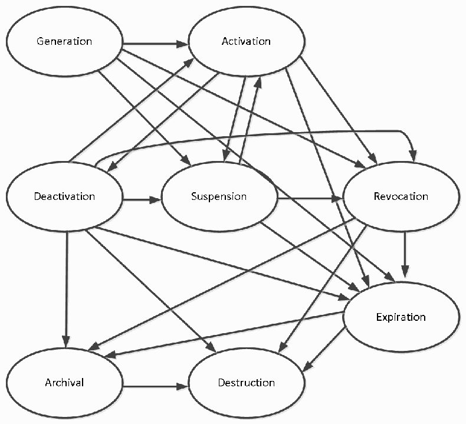
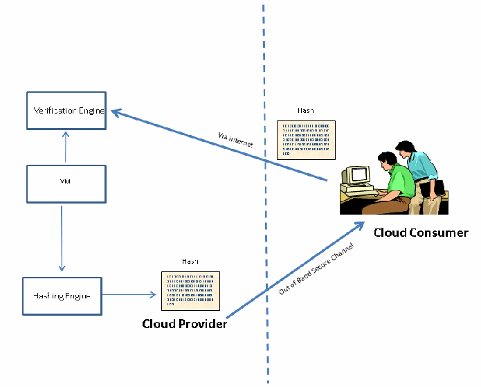

NIST IR 7956 日本語訳
英語タイトル : Cryptographic Key Management Issues & Challenges in Cloud Services日本語タイトル : クラウドサービスにおける暗号鍵管理の問題と課題
公開日 : 2013-09-18
原文URL : https://csrc.nist.gov/pubs/ir/7956/final
翻訳編集 : 自動生成（有志による非公式の日本語訳）, 原文取得日 : 2026-10-31, 訳文 : 280 / 282 ブロック
[要約] NIST IR 7956 は、クラウドサービスにおける暗号鍵管理の問題と課題を特定する報告書です。Infrastructure as a Service（IaaS）、Platform as a Service（PaaS）、Software as a Service（SaaS）に共通する中核的な機能群に基づき、それらの機能を実行するために必要なセキュリティ能力と、伴う暗号操作の集合を特定します。クラウド環境では、エンタープライズの IT 環境と比べて、所有者の違い（クラウド利用者とクラウドプロバイダの間）と、鍵管理システム（KMS）および保護対象リソースが置かれているインフラストラクチャの制御の違いにより、暗号鍵の管理に複雑さが加わるとしています。暗号鍵管理の概要、NIST によるクラウドコンピューティングの定義と参照アーキテクチャを説明したうえで、IaaS、PaaS、SaaS それぞれの暗号操作と鍵管理における課題を論じ、付録で VM テンプレートの認証に用いる暗号技術のセキュリティ分析を示します。
NISTIR 7956
NISTIR 7956
Cryptographic Key Management Issues & Challenges in Cloud Services
クラウドサービスにおける暗号鍵管理の問題と課題
Ramaswamy Chandramouli
Michaela Iorga
Santosh Chokhani
Ramaswamy Chandramouli
Michaela Iorga
Santosh Chokhani
http://dx.doi.org/10.6028/NIST.IR.7956
http://dx.doi.org/10.6028/NIST.IR.7956
［NIST のロゴ。公的な標章のため、この非公式サイトには掲載していません。原本 PDF を参照してください。］
NISTIR 7956
NISTIR 7956
Cryptographic Key Management Issues & Challenges in Cloud Services
クラウドサービスにおける暗号鍵管理の問題と課題
Ramaswamy Chandramouli
Michaela Iorga
Computer Security Division
Information Technology Laboratory
Ramaswamy Chandramouli
Michaela Iorga
コンピュータセキュリティ部門
情報技術研究所
Santosh Chokhani
Cygnacom Solutions
Santosh Chokhani
Cygnacom Solutions
http://dx.doi.org/10.6028/NIST.IR.7956
http://dx.doi.org/10.6028/NIST.IR.7956
September 2013
2013 年 9 月
U.S. Department of Commerce
Penny Pritzker, Secretary
米国商務省
Penny Pritzker 長官
National Institute of Standards and Technology
Patrick D. Gallagher, Under Secretary of Commerce for Standards and Technology and Director
米国標準技術研究所
Patrick D. Gallagher、NIST 所長兼商務次官（標準・技術担当）
National Institute of Standards and Technology Interagency or Internal Report 7956
35 pages (September 2013)
米国標準技術研究所 省庁間報告書または内部報告書 7956
35 ページ（2013 年 9 月）
Certain commercial entities, equipment, or materials may be identified in this document in order to describe an experimental procedure or concept adequately. Such identification is not intended to imply recommendation or endorsement by NIST, nor is it intended to imply that the entities, materials, or equipment are necessarily the best available for the purpose.
本書では、実験の手順や概念を適切に説明するために、特定の商業事業者、装置、または資材を挙げている場合があります。こうした記載は、NIST による推奨や支持を意味するものではなく、挙げられた事業者、資材、または装置がその目的に必ずしも最適であることを意味するものでもありません。
There may be references in this publication to other publications currently under development by NIST in accordance with its assigned statutory responsibilities. The information in this publication, including concepts and methodologies, may be used by Federal agencies even before the completion of such companion publications. Thus, until each publication is completed, current requirements, guidelines, and procedures, where they exist, remain operative. For planning and transition purposes, Federal agencies may wish to closely follow the development of these new publications by NIST.
本刊行物には、NIST が法令で定められた責務に従って現在策定中のほかの刊行物への言及が含まれている場合があります。概念や方法論を含む本刊行物の情報は、そうした関連刊行物の完成前であっても、連邦機関が利用してもよいです。したがって、各刊行物が完成するまでは、現行の要件、ガイドライン、手順が存在する場合には、それらが引き続き有効です。計画および移行のため、連邦機関は、NIST によるこれらの新しい刊行物の策定状況を注意深く追うことを検討してもよいです。
Organizations are encouraged to review all draft publications during public comment periods and provide feedback to NIST. All NIST Computer Security Division publications, other than the ones noted above, are available at http://csrc.nist.gov/publications.
組織は、パブリックコメント期間中にすべてのドラフト刊行物を確認し、NIST にフィードバックを提供することが推奨されています。上記以外の NIST コンピュータセキュリティ部門のすべての刊行物は、http://csrc.nist.gov/publications で入手できます。
Reports on Computer Systems Technology
コンピュータシステム技術に関する報告書
The Information Technology Laboratory (ITL) at the National Institute of Standards and Technology (NIST) promotes the U.S. economy and public welfare by providing technical leadership for the Nation’s measurement and standards infrastructure. ITL develops tests, test methods, reference data, proof of concept implementations, and technical analyses to advance the development and productive use of information technology. ITL’s responsibilities include the development of management, administrative, technical, and physical standards and guidelines for the cost-effective security and privacy of other than national security-related information in Federal information systems.
米国標準技術研究所（NIST）の情報技術研究所（ITL）は、国の計測・標準基盤に対する技術的なリーダーシップを提供することで、米国の経済と公共の福祉を促進しています。ITL は、情報技術の開発と生産的な利用を進めるために、試験、試験方法、参照データ、概念実証の実装、技術分析を開発しています。ITL の責務には、連邦情報システムにおける国家安全保障関連以外の情報のセキュリティとプライバシーを費用対効果よく確保するための、管理、運用管理上、技術的、物理的な標準およびガイドラインの策定が含まれます。
Abstract
概要
To interact with various services in the cloud and to store the data generated/processed by those services, several security capabilities are required. Based on a core set of features in the three common cloud services - Infrastructure as a Service (IaaS), Platform as a Service (PaaS) and Software as a Service (SaaS), we identify a set of security capabilities needed to exercise those features and the cryptographic operations they entail. An analysis of the common state of practice of the cryptographic operations that provide those security capabilities reveals that the management of cryptographic keys takes on an additional complexity in cloud environments compared to enterprise IT environments due to: (a) difference in ownership (between cloud Consumers and cloud Providers) and (b) control of infrastructures on which both the Key Management System (KMS) and protected resources are located. This document identifies the cryptographic key management challenges in the context of architectural solutions that are commonly deployed to perform those cryptographic operations.
クラウド内のさまざまなサービスとやり取りし、それらのサービスが生成・処理するデータを保存するには、複数のセキュリティ能力が必要です。3 つの一般的なクラウドサービス、すなわち Infrastructure as a Service（IaaS）、Platform as a Service（PaaS）、Software as a Service（SaaS）に共通する中核的な機能群に基づき、本書は、それらの機能を実行するために必要なセキュリティ能力と、それらに伴う暗号操作の集合を特定します。これらのセキュリティ能力を提供する暗号操作の一般的な実践状況を分析すると、クラウド環境では、エンタープライズの IT 環境と比べて、暗号鍵の管理に複雑さが加わることがわかります。その理由は、(a) 所有者の違い（クラウド利用者とクラウドプロバイダの間）、および (b) 鍵管理システム（KMS）と保護対象リソースの両方が置かれているインフラストラクチャの制御の違いにあります。本書は、それらの暗号操作を実行するために一般に導入されているアーキテクチャ上のソリューションを背景として、暗号鍵管理の課題を特定します。
Keywords
キーワード
Authentication; Cloud Services; Data Protection; Encryption; Key Management System (KMS); Secure Shell (SSH); Transport Layer Security (TLS)
認証; クラウドサービス; データ保護; 暗号化; 鍵管理システム（KMS）; Secure Shell（SSH）; トランスポート層セキュリティ（TLS）
Table of Contents
目次
Executive Summary
エグゼクティブサマリー
Encryption and access control are the two primary means for ensuring data confidentiality in any IT environment. In situations where encryption is used as a data confidentiality assurance measure, the management of cryptographic keys is a critical and challenging security management function, especially in large enterprise data centers, due to sheer volume and data distribution (in different physical and logical storage media), and the consequent number of cryptographic keys. This function becomes more complex in the case of a cloud environment, where the physical and logical control of resources (both computing and networking) is split between cloud actors (e.g., Consumers, Providers, and Brokers) (see Section 2.2 below and NIST SP 500-292 for more details).
暗号化とアクセス制御は、あらゆる IT 環境においてデータの機密性を確保するための 2 つの主要な手段です。データの機密性を保証する手段として暗号化が使われる場合、暗号鍵の管理は、重要かつ困難なセキュリティ管理機能です。特に大規模なエンタープライズデータセンターでは、データ量が膨大であること、データが（異なる物理および論理記憶媒体に）分散していること、そしてその結果として暗号鍵の数が多くなることが理由です。この機能は、リソース（コンピューティングとネットワーキングの両方）の物理的・論理的な制御がクラウドのアクター（たとえば、利用者、プロバイダ、ブローカー）の間で分割されているクラウド環境では、さらに複雑になります（詳細は下記の 2.2 節と NIST SP 500-292 を参照してください）。
The objectives of this document are to identify:
本書の目的は、次を特定することです。
(a) The cryptographic key management issues that arise due to the distributed nature of IT resources, as well the distributed nature of their control, the latter split among multiple cloud actors. Furthermore, the pattern of distribution varies with the type of service offering -Infrastructure as a Service (IaaS), Platform as a Service (PaaS) and Software as a Service (SaaS).
(a) IT リソースそのものの分散性、ならびにその制御の分散性（後者は複数のクラウドアクターの間で分割されています）によって生じる暗号鍵管理の問題。さらに、分散のパターンはサービス提供の種類（Infrastructure as a Service（IaaS）、Platform as a Service（PaaS）、Software as a Service（SaaS））によって異なります。
(b) the special challenges involved in deploying cryptographic key management functions that meet the security requirements of the cloud Consumers, depending upon the nature of the service and the type of data generated/processed/stored by the service features.
(b) サービスの性質と、サービスの機能が生成・処理・保存するデータの種類に応じて、クラウド利用者のセキュリティ要件を満たす暗号鍵管理機能を展開するうえでの特有の課題。
In this document, we address the following topics:
本書では、次のトピックを扱います。
1.Section 1 provides an overview of cryptographic key management;
1.第 1 節では、暗号鍵管理の概要を示します。
2.Section 2 provides a summary of the cloud computing concepts, including a reference architecture (cloud actors, cloud service types and deployment models) as identified in NIST standards; and
2.第 2 節では、NIST の標準で特定されている参照アーキテクチャ（クラウドアクター、クラウドサービスの種類、展開モデル）を含む、クラウドコンピューティングの概念の概要を示します。
3.Section 3 builds on the previous sections to identify a core set of features for the three main cloud service types – IaaS, PaaS and SaaS: the security capabilities (SC) required to exercise those features, architectural solutions available to meet the security capabilities and the consequent key management challenges.
3.第 3 節では、前の節を踏まえて、主要な 3 種類のクラウドサービス（IaaS、PaaS、SaaS）について、中核となる機能群、それらの機能を実現するために必要なセキュリティ能力（SC）、セキュリティ能力を満たすために利用できるアーキテクチャ上のソリューション、およびその結果として生じる鍵管理の課題を特定します。
In order to ensure that cryptographic mechanisms provide the desired security, the following criteria should be met with regards to their three main components – Algorithms (and associated modes of operation), Protocols and Implementation:
暗号メカニズムが期待されるセキュリティを確実に提供するために、その 3 つの主要な構成要素であるアルゴリズム（および関連する動作モード）、プロトコル、実装について、次の基準を満たすべきです。
1.The cryptographic algorithms and associated modes of operation deployed should have been scrutinized, evaluated, and approved using a review process that is open and includes a wide range of experts in the field. Examples of such approved algorithms and modes are found in National Institute of Standards and Technology’s Federal Information Processing Standards (FIPS) and Special Publications (SPs), and in the Internet Engineering Task Force (IETF) Request for Comment (RFC) documents. The specific NIST documents pertaining to cryptographic algorithms and associated modes of operation are: FIPS 186-3 for Digital Signatures, FIPS 180-4 for Secure Hash, SP 800-38A for modes of operation and SP 800-56A & SP 800-56B for key establishment.
1.導入する暗号アルゴリズムと関連する動作モードは、その分野の幅広い専門家が参加する公開レビュープロセスによって精査、評価、承認すべきです。このように承認されたアルゴリズムと動作モードの例は、米国標準技術研究所（NIST）の連邦情報処理規格（FIPS）と特別刊行物（SP）、およびインターネット技術タスクフォース（IETF）の Request for Comment（RFC）文書にあります。暗号アルゴリズムと関連する動作モードに関する具体的な NIST 文書は、デジタル署名については FIPS 186-3、セキュアハッシュについては FIPS 180-4、動作モードについては SP 800-38A、鍵確立については SP 800-56A & SP 800-56B です。
2.The cryptographic protocols used should have been scrutinized, evaluated, and approved using a review process that is open and includes a wide range of experts in the field. IETF protocol specifications for Secure Shell (SSH) and Transport Layer Security (TLS) are examples that meet these criteria.
2.使用する暗号プロトコルは、その分野の幅広い専門家が参加する公開レビュープロセスによって精査、評価、承認すべきです。Secure Shell（SSH）とトランスポート層セキュリティ（TLS）に関する IETF のプロトコル仕様は、これらの基準を満たす例です。
3.The implementation of a cryptographic algorithm or protocol should undergo a widely recognized and reputable independent testing for verification of conformance to underlying specifications. NIST’s Cryptographic Algorithm Validation Program (CAVP) and Cryptographic Module Validation Program (CMVP) are examples of such independent testing programs.
3.暗号アルゴリズムまたはプロトコルの実装は、基礎となる仕様への適合性を検証するために、広く認知され評価の高い独立した試験を受けるべきです。NIST の暗号アルゴリズム妥当性確認プログラム（CAVP）と暗号モジュール妥当性確認プログラム（CMVP）は、そのような独立した試験プログラムの例です。
1. Cryptographic Key Management Overview
1. 暗号鍵管理の概要
In this section, we review the two broad categories of cryptographic keys, list the most commonly used key types, identify the key states and chart the resulting transition diagram. We then describe the most important key management functions (also referred to as key lifecycle operations) and list the generic security requirements associated with these functions.
この節では、暗号鍵の 2 つの大きな分類を確認し、最も一般的に使われる鍵の種類を挙げ、鍵の状態を特定して、その結果としての遷移図を示します。続いて、最も重要な鍵管理機能（鍵ライフサイクル操作とも呼ばれます）を説明し、これらの機能に関連する一般的なセキュリティ要件を挙げます。
1.1 Key Types
1.1 鍵の種類
Cryptographic keys fall into two broad categories:
暗号鍵は、次の 2 つの大きな分類に分けられます。
1.Secret key: A key that is generally used to 1) perform encryption/decryption using symmetric cryptographic algorithms; and/or 2) to provide data integrity using message authentication codes (i.e., Hash based Message Authentication Code or HMAC) or an encryption mode of operation that also provides data integrity. A secret key is also called a symmetric key, since the same key is required for encryption and decryption or for integrity value generation and integrity verification.
1.共通鍵: 一般に、1) 共通鍵暗号アルゴリズムを用いた暗号化／復号の実行、および／または 2) メッセージ認証コード（すなわち、ハッシュベースのメッセージ認証コード（HMAC））や、データの完全性も提供する暗号の動作モードによるデータ完全性の提供に使われる鍵です。共通鍵は、暗号化と復号、または完全性値の生成と完全性値の検証に同じ鍵が必要であるため、symmetric key とも呼ばれます。
2.Public/Private Key Pair: A pair of mathematically related keys used in asymmetric cryptography for authentication, digital signature, or key establishment. As the name indicates, the private key is used by the owner of the key pair, is kept secret, and should be protected at all times, while the public key can be published and used be the relying party to complete the protocol or invert the operations performed with the private key.
2.公開鍵／秘密鍵ペア: 認証、デジタル署名、または鍵確立のために公開鍵暗号で用いられる、数学的に関連する鍵のペアです。その名のとおり、秘密鍵は鍵ペアの所有者が使用し、秘密に保ち、常に保護すべきです。一方、公開鍵は公開でき、依拠当事者がプロトコルを完了するため、または秘密鍵で行われた操作を逆にするために使用できます。
From these broad categories one can determine the most commonly used key types in a cloud computing environment. This is not to say that a cloud implementation may not have additional types of keys.
これらの大きな分類から、クラウドコンピューティング環境で最も一般的に使われる鍵の種類を判断できます。これは、クラウドの実装に、これら以外の種類の鍵がないということではありません。
1.Public/Private Authentication Key Pair: This key pair is used by one party (peer, client or server) to authenticate to the other party. Its typical use entails combining a random challenge with the signer-generated random number and signing the result for the benefit of the challenger who wishes to authenticate the private-key holder. Examples of usage include client-authenticated Transport Layer Security (TLS), Virtual Private Network (VPN) authentication, and smart card-based logon. An authentication key pair is generally used in a network environment and is generally used for long-term use (e.g., up to 3 years)
1.公開鍵／秘密鍵の認証用鍵ペア: この鍵ペアは、一方の当事者（ピア、クライアント、またはサーバー）がもう一方の当事者に対して認証するために使われます。典型的な使い方では、ランダムなチャレンジと署名者が生成した乱数を組み合わせ、その結果に署名して、秘密鍵の保持者を認証しようとするチャレンジ側に提供します。使用例には、クライアント認証付きのトランスポート層セキュリティ（TLS）、仮想プライベートネットワーク（VPN）の認証、スマートカードベースのログオンがあります。認証用鍵ペアは、一般にネットワーク環境で使用され、一般に長期間の使用（たとえば最長 3 年）に用いられます
2.Public/Private Signature Key Pair: The private key of the key pair is used by one party to digitally sign a message/data, while the corresponding public key is used to verify the signature. Examples of the usage of a signature key pair are signed Secure/Multipart Internet Mail Extensions (S/MIME) messages, signed electronic documents, and signed code. In some implementations, a key pair may be used for both authentication and signature functions. A signature key pair is generally used in a network environment and is generally used for long-term use (e.g., up to 3 years). It may also be used to generate and verify signatures on stored data.
2.公開鍵／秘密鍵の署名用鍵ペア: 鍵ペアの秘密鍵は、一方の当事者がメッセージ／データにデジタル署名するために使い、対応する公開鍵は署名を検証するために使います。署名用鍵ペアの使用例には、署名付きの Secure/Multipart Internet Mail Extensions（S/MIME）メッセージ、署名付き電子文書、署名付きコードがあります。実装によっては、1 つの鍵ペアを認証機能と署名機能の両方に使う場合があります。署名用鍵ペアは、一般にネットワーク環境で使用され、一般に長期間の使用（たとえば最長 3 年）に用いられます。保存されたデータに対する署名の生成と検証にも使用される場合があります。
3.Public/Private Key Establishment Pair: This key pair is used to securely establish a key between parties. Examples of the use of a key pair for key establishment are encrypting the symmetric key for S/MIME payload encryption/decryption and encrypting the random secret to be sent from a TLS client to a server. It is recommended that key establishment key pairs be distinct from authentication and signature key pairs. However, it is recognized that some devices such as web servers use the same key pair for key establishment and authentication. A key establishment key pair is traditionally used in a network environment, but some usage for stored data is also seen and can be envisioned. A key establishment key pair is generally used for a pre-defined period for encryption (e.g., up to 3 years), but is used for decryption for as long as the confidentiality of the data needs to be protected.
3.公開鍵／秘密鍵の鍵確立用ペア: この鍵ペアは、当事者間で鍵を安全に確立するために使われます。鍵確立のための鍵ペアの使用例には、S/MIME のペイロードの暗号化／復号のための共通鍵の暗号化や、TLS クライアントからサーバーに送られるランダムなシークレットの暗号化があります。鍵確立用の鍵ペアは、認証用および署名用の鍵ペアとは別のものにすべきです。ただし、Web サーバーなど一部のデバイスは、鍵確立と認証に同じ鍵ペアを使用することが認識されています。鍵確立用の鍵ペアは、従来はネットワーク環境で使用されますが、保存されたデータに対する使用も見られ、想定もできます。鍵確立用の鍵ペアは、一般に、暗号化については定められた期間（たとえば最長 3 年）使用されますが、復号については、データの機密性を保護する必要がある限り使用されます。
4.Symmetric Encryption/Decryption Key: A symmetric key is used to encrypt and decrypt data or messages. For data-in-transit, a symmetric encryption/decryption key may have a short life, typically for each message (e.g., S/MIME message) or for each session (for example a TLS session). For stored data, the symmetric life of the encryption/decryption key tends to be as long as the confidentiality of the data needs to be protected.
4.共通鍵の暗号化／復号用鍵: 共通鍵は、データまたはメッセージの暗号化と復号に使われます。転送中のデータでは、共通鍵の暗号化／復号用鍵は短期間だけ使われ、通常はメッセージごと（たとえば S/MIME メッセージ）またはセッションごと（たとえば TLS セッション）に使われます。保存されたデータでは、暗号化／復号用鍵は、データの機密性を保護する必要がある期間と同じ長さだけ使われる傾向があります。
5.Symmetric Message Authentication Code (MAC) Key: A symmetric key is used to provide assurance for the integrity of data. There are three techniques used to provide this assurance: 1) use a symmetric encryption algorithm and a MAC mode of operation (e.g., CMAC using AES); 2) use a symmetric encryption algorithm and an authenticated encryption mode of operation (e.g., GCM or CCM using AES); and 3) use a hash-based MAC (HMAC). For data-in-transit, a symmetric MAC key has a short life, typically for a single message or for a single session (for example a TLS session). For stored data, the life of a symmetric MAC key tends to be for as long as the data needs to be protected. Note that when authenticated encryption mode is used, the same key is used for both the MAC and encryption/decryption, since both objectives are achieved by invoking a single mode of operation.
5.共通鍵のメッセージ認証コード（MAC）用鍵: 共通鍵は、データの完全性の保証を提供するために使われます。この保証を提供するために使われる技術は 3 つあります。1) 共通鍵暗号アルゴリズムと MAC の動作モード（たとえば、AES を用いた CMAC）を使用する方法、2) 共通鍵暗号アルゴリズムと認証付き暗号の動作モード（たとえば、AES を用いた GCM または CCM）を使用する方法、3) ハッシュベースの MAC（HMAC）を使用する方法です。転送中のデータでは、共通鍵の MAC 用鍵の寿命は短く、通常は単一のメッセージまたは単一のセッション（たとえば TLS セッション）です。保存されたデータでは、共通鍵の MAC 用鍵の寿命は、データを保護する必要がある期間と同じ長さになる傾向があります。認証付き暗号の動作モードを使用する場合、単一の動作モードを呼び出すことで両方の目的が達成されるため、MAC と暗号化／復号の両方に同じ鍵が使われることに注意してください。
6.Symmetric Key Wrapping Key: A symmetric key is used to encrypt a symmetric key or an asymmetric private key. A Key Wrapping Key is also called a Key Encrypting Key.
6.共通鍵のラッピング用鍵: 共通鍵は、共通鍵または非対称の秘密鍵を暗号化するために使われます。鍵ラッピング鍵は、鍵暗号化鍵とも呼ばれます。
1.2 Key States
1.2 鍵の状態
A symmetric key or public/private key pair can undergo the following states. This is not to say that a key management implementation may not have additional states. Alternatively, a key management implementation may have a subset of these states.
共通鍵または公開鍵／秘密鍵ペアは、次の状態をとりえます。これは、鍵管理の実装に、これら以外の状態がないということではありません。逆に、鍵管理の実装が、これらの状態の一部だけを持つ場合もあります。
•Generation: A symmetric key or public/private key pair is generated when required.
•生成: 共通鍵または公開鍵／秘密鍵ペアは、必要なときに生成されます。
•Activation: A symmetric key or private key is activated when it is required to be used. A public key is activated when it is made available or on the date indicated in its associated metadata (e.g., notBefore date in an X.509 public key certificate).
•有効化: 共通鍵または秘密鍵は、使用する必要があるときに有効化されます。公開鍵は、利用可能にされたとき、または関連するメタデータに示された日付（たとえば X.509 公開鍵証明書の notBefore の日付）に有効化されます。
•Deactivation: A symmetric key or private key is deactivated when it is no longer required for applying cryptographic protection to data. Deactivation of these keys may be followed by destruction or archival. A public key is not deactivated. It may expire (e.g., at the notAfter date in an X.509 public key certificate), or may be suspended (e.g., via certificate revocation list (CRL) [refer RFC 4949] in X.509 standard) or revoked (e.g., via CRL in X.509 standard).
•無効化: 共通鍵または秘密鍵は、データに暗号による保護を適用するためにもはや必要でなくなったときに無効化されます。これらの鍵の無効化の後に、破棄またはアーカイブが続く場合があります。公開鍵は無効化されません。公開鍵は、有効期限が切れる（たとえば X.509 公開鍵証明書の notAfter の日付）、一時停止される（たとえば X.509 標準の証明書失効リスト（CRL）[RFC 4949 を参照]による）、または失効される（たとえば X.509 標準の CRL による）場合があります。
•Suspension: A key may be suspended from use for a variety of reasons, such as an unknown status of the key or due to the key owner being temporarily away. In the case of the public key, suspension of the companion private key is communicated to the relying parties. This may be communicated as an “On hold” revocation reason code in a CRL and in an Online Certificate Status Protocol (OCSP) response
•一時停止: 鍵は、鍵の状態が不明である、鍵の所有者が一時的に不在であるなど、さまざまな理由で使用を一時停止される場合があります。公開鍵の場合、対となる秘密鍵の一時停止は、依拠当事者に伝えられます。これは、CRL とオンライン証明書状態プロトコル（OCSP）応答において、失効理由コード「On hold」として伝えられる場合があります
•Expiration: A key may expire due to the end of its crypto period [refer RFC 4949]. In the case of a public key, an expiration date is indicated in the associated metadata (e.g., notAfter date in X.509 certificates).
•有効期限切れ: 鍵は、暗号期間の終了により有効期限が切れる場合があります [RFC 4949 を参照]。公開鍵の場合、有効期限は関連するメタデータ（たとえば X.509 証明書の notAfter の日付）に示されます。
•Destruction: A key is destroyed when it is no longer needed.
•破棄: 鍵は、もはや必要でなくなったときに破棄されます。
•Archival: A key may be archived when it is no longer required for normal use, but may be needed after the key’s cryptoperiod. An example for secret or private keys is the possible decryption of archived data. An example for public keys is the verification of archived signed documents.
•アーカイブ: 鍵は、通常の使用にはもはや必要でなくなったものの、鍵の暗号期間の後にも必要となる可能性がある場合に、アーカイブされる場合があります。共通鍵または秘密鍵の例は、アーカイブされたデータの復号が必要になる場合です。公開鍵の例は、アーカイブされた署名付き文書の検証です。
•Revocation: A revocation is explicitly stated with respect to public keys; however, the revocation also applies to the corresponding private key. Revocation information is securely communicated to the relying parties, for example, as CRLs or OCSP responses, in the case of X.509 public key certificates. Secret keys are also “revoked”, often by including them on lists, such as a compromised key list.
•失効: 失効は公開鍵について明示的に述べられますが、失効は対応する秘密鍵にも適用されます。失効情報は、たとえば X.509 公開鍵証明書の場合は CRL や OCSP 応答として、依拠当事者に安全に伝えられます。共通鍵も、多くの場合、危殆化した鍵のリストなどのリストに含めることによって「失効」されます。
The following is the state diagram for the key states.
鍵の状態の状態遷移図は次のとおりです。

「Generation」「Activation」「Deactivation」「Suspension」「Revocation」「Expiration」「Archival」「Destruction」の 8 つの楕円を、鍵の状態の間で起こり得る遷移を表す多数の矢印で結んだ状態遷移図です（例: Generation から Activation、Deactivation から Suspension、Suspension から Revocation、Revocation から Expiration、Archival から Destruction）。
Figure 1: State Diagram for the Key States
図 1: 鍵の状態の状態遷移図
1.3 Key Management Functions
1.3 鍵管理機能
The following are the important key management functions:
重要な鍵管理機能は次のとおりです。
•Generate Key: The generation of good-quality keys is critical to security. Keys for a cryptographic algorithm should be generated in cryptographic modules that have been approved for the generation of keys for that algorithm.
•鍵の生成: 品質の高い鍵の生成は、セキュリティにとって重要です。暗号アルゴリズム用の鍵は、そのアルゴリズム用の鍵の生成が承認された暗号モジュール内で生成されるべきです。
•Generate Domain Parameters: Discrete Logarithm-based algorithms require the generation of domain parameters prior to the generation of the keys; the keys are generated using those domain parameters. The domain parameters for an algorithm shall be generated in approved cryptographic modules that have been approved for their generation. Since domain parameters can be common to a broad community of users, key generation need not entail domain parameter generation. For example, defining Suite B P-256 curve defines all the domain parameters for the attendant ECDSA and ECDH algorithms.
•ドメインパラメーターの生成: 離散対数ベースのアルゴリズムでは、鍵の生成に先立ってドメインパラメーターの生成が必要です。鍵は、それらのドメインパラメーターを使用して生成されます。アルゴリズムのドメインパラメーターは、その生成が承認された暗号モジュール内で生成しなければなりません。ドメインパラメーターは広いユーザーコミュニティで共通にできるため、鍵の生成にドメインパラメーターの生成が伴う必要はありません。たとえば、Suite B の P-256 曲線を定義すると、付随する ECDSA と ECDH のアルゴリズムのドメインパラメーターがすべて定義されます。
•Bind Key and Metadata: A key may have associated data, such as the time period of use, usage constraints (such as authentication, encryption, and/or key establishment), domain parameters, and security services for which they are used, such as source authentication, integrity, and confidentiality protection. This function provides assurance that the key is associated with the correct metadata.
•鍵とメタデータの結び付け: 鍵には、使用期間、使用上の制約（認証、暗号化、および／または鍵確立など）、ドメインパラメーター、鍵が使われるセキュリティサービス（出所認証、完全性、機密性の保護など）といった、関連するデータがある場合があります。この機能は、鍵が正しいメタデータと関連付けられているという保証を提供します。
•Bind a Key to an Individual: The identifier of the individual or other entity that owns a key is considered as part of the key’s metadata, but this association is sufficiently critical to be listed as a distinct function.
•鍵と個人の結び付け: 鍵を所有する個人またはその他のエンティティの識別子は、鍵のメタデータの一部とみなされますが、この関連付けは十分に重要であるため、独立した機能として挙げられています。
•Activate Key: This function transitions a key to the active state. It is often done in conjunction with key generation.
•鍵の有効化: この機能は、鍵を有効な状態に遷移させます。多くの場合、鍵の生成と合わせて行われます。
•Deactivate Key: This function is generally done when a key is no longer needed for applying cryptographic protection. For example, when a key has expired, or is replaced by another key.
•鍵の無効化: この機能は、一般に、暗号による保護を適用するために鍵がもはや必要でなくなったときに行われます。たとえば、鍵の有効期限が切れたとき、または別の鍵に置き換えられたときです。
•Backup Key: A key is backed by the owner, the key management infrastructure, or a third party in order to reconstitute the key when it is accidentally destroyed or otherwise unavailable. When a private or secret key is backed up by the key management infrastructure or by a third party, the function is also referred to as “key escrow”.
•鍵のバックアップ: 鍵は、誤って破棄された場合やその他の理由で利用できなくなった場合に鍵を再構築するために、所有者、鍵管理基盤、または第三者によってバックアップされます。秘密鍵または共通鍵が鍵管理基盤または第三者によってバックアップされる場合、この機能は「鍵エスクロー」とも呼ばれます。
•Recover Key: This function is complementary to the key backup function and is invoked when the key is unavailable for some reason and is required by the authorized parties. Key backup and recovery generally applies to the symmetric and private keys.
•鍵の復旧: この機能は、鍵のバックアップ機能を補完するものであり、鍵が何らかの理由で利用できず、権限を持つ当事者が必要とするときに呼び出されます。鍵のバックアップと復旧は、一般に共通鍵と秘密鍵に適用されます。
•Modify Metadata: This function is invoked when metadata bound to a key needs to change. The renewal of a public key certificate is an example of this function where the validity period for the public key is changed.
•メタデータの変更: この機能は、鍵に結び付けられたメタデータを変更する必要があるときに呼び出されます。公開鍵証明書の更新は、公開鍵の有効期間が変更されるこの機能の例です。
•Rekey: This function is used to replace the existing key with a new key. Generally, the existing key (the key being replaced) plays a role in authentication and authorization for replacement.
•鍵の更新（Rekey）: この機能は、既存の鍵を新しい鍵に置き換えるために使われます。一般に、既存の鍵（置き換えられる鍵）が、置き換えの認証と認可で役割を果たします。
•Suspend a Key: This function is used to temporarily cease the use of a key. It is akin to reversible revocation. This function may need to be invoked if the status of a key is undetermined or if the key owner wishes to temporarily suspend its use (e.g., for extended leave). For secret keys, this can also be accomplished via key deactivation. For public keys and the companion private key, this is generally done using suspension notification of the public key.
•鍵の一時停止: この機能は、鍵の使用を一時的に停止するために使われます。可逆的な失効に似ています。この機能は、鍵の状態が確定していない場合や、鍵の所有者が使用を一時的に停止したい場合（たとえば、長期休暇のため）に呼び出す必要がある場合があります。共通鍵では、鍵の無効化によっても実現できます。公開鍵と対となる秘密鍵では、一般に公開鍵の一時停止通知を用いて行われます。
•Restore a Key: This function is used to restore a suspended key once its secure status is ascertained. For secret keys, this can also be accomplished via key activation. For public keys and the companion private keys, this is generally done using a revocation notification where the revoked public key entry is deleted implying the key is valid.
•鍵の復元: この機能は、一時停止された鍵の安全な状態が確認された後に、その鍵を復元するために使われます。共通鍵では、鍵の有効化によっても実現できます。公開鍵と対となる秘密鍵では、一般に、失効した公開鍵のエントリーを削除することで鍵が有効であることを示す失効通知を用いて行われます。
•Revoke a Key: This function is used to inform the relying parties to stop using a public key. There may be a variety of reasons for this, including the compromise of companion private key, and the owner having stopped using the companion private key.
•鍵の失効: この機能は、依拠当事者に公開鍵の使用を停止するよう通知するために使われます。これには、対となる秘密鍵の危殆化や、所有者が対となる秘密鍵の使用を停止したことなど、さまざまな理由がありえます。
•Archive a Key: This function is used to store a key in long-term storage after it has been deactivated, expired, and/or compromised.
•鍵のアーカイブ: この機能は、鍵が無効化された後、有効期限が切れた後、および／または危殆化した後に、その鍵を長期保管に保存するために使われます。
•Destroy a Key: This function is used to zeroize a key when it should no longer be used.
•鍵の破棄: この機能は、鍵をもはや使用すべきでないときに、その鍵をゼロ化するために使われます。
•Manage TA Store: This function is used by the relying party to determine what trust anchors to trust for what purpose. A trust anchor is a public key and its associated metadata that the relying party explicitly trusts and uses to establish trust in other public keys via transitive trust, such as a public-key certification path that is a series of public key certificates where the digital signature in one certificate can be used to verify the digital signature on the next certificate.
•TA ストアの管理: この機能は、依拠当事者が、どのトラストアンカーをどの目的で信頼するかを決定するために使います。トラストアンカーとは、依拠当事者が明示的に信頼する公開鍵とそれに関連するメタデータであり、推移的信頼によって他の公開鍵への信頼を確立するために使われます。たとえば、公開鍵証明書パスは、一連の公開鍵証明書であって、ある証明書のデジタル署名を使って次の証明書のデジタル署名を検証できるものです。
1.4 Key Management - Generic Security Requirements
1.4 鍵管理 - 一般的なセキュリティ要件
The following are general key management security requirements:
一般的な鍵管理のセキュリティ要件は次のとおりです。
1.Parties performing key management functions are properly authenticated and their authorizations to perform the key management functions for a given key are properly verified.
1.鍵管理機能を実行する当事者は適切に認証され、特定の鍵に対して鍵管理機能を実行する権限が適切に検証されます。
2.All key management commands and associated data are protected from spoofing, i.e., source authentication is performed prior to executing a command.
2.すべての鍵管理コマンドと関連データは、なりすましから保護されます。すなわち、コマンドの実行に先立って出所認証が行われます。
3.All key management commands and associated data are protected from undetected, unauthorized modifications, i.e., integrity protection is provided.
3.すべての鍵管理コマンドと関連データは、検知されない不正な変更から保護されます。すなわち、完全性の保護が提供されます。
4.Secret and private keys are protected from unauthorized disclosure.
4.共通鍵と秘密鍵は、不正な開示から保護されます。
5.All keys and metadata are protected from spoofing, i.e., source authentication is performed prior to accessing keys and metadata.
5.すべての鍵とメタデータは、なりすましから保護されます。すなわち、鍵とメタデータにアクセスする前に出所認証が行われます。
6.All keys and metadata are protected from undetected, unauthorized modifications, i.e., integrity protection is provided.
6.すべての鍵とメタデータは、検知されない不正な変更から保護されます。すなわち、完全性の保護が提供されます。
7.When cryptography is used as a protection mechanism for any of the above, the security strength of the cryptographic mechanism used is at least as strong as the security strength required for the keys being managed.
7.上記のいずれかの保護メカニズムとして暗号が使用される場合、使用される暗号メカニズムのセキュリティ強度は、管理される鍵に求められるセキュリティ強度と少なくとも同等です。
There are significant challenges to implementing these key management security requirements in cloud computing over unsecure public networks. In the next sections, we review the cloud computing reference architecture and identify, for the three main cloud service types – IaaS, PaaS and SaaS - a core set of features, the security capabilities (SC) required to exercise these features, architectural solutions available to meet the security capabilities, and the consequent key management challenges.
保護されていない公開ネットワーク上のクラウドコンピューティングで、これらの鍵管理のセキュリティ要件を実装するには、重大な課題があります。次の節では、クラウドコンピューティングの参照アーキテクチャを確認し、3 つの主要なクラウドサービスの種類（IaaS、PaaS、SaaS）について、中核的な機能群、それらの機能を実行するために必要なセキュリティ能力（SC）、セキュリティ能力を満たすために利用できるアーキテクチャ上のソリューション、およびその結果として生じる鍵管理の課題を特定します。
2. Cloud Computing Environment – Evolution & State of Practice
2. クラウドコンピューティング環境 – 進化と実践状況
2.1 Three Generations of Internet
2.1 インターネットの 3 つの世代
The evolution of the internet can be divided into three generations: in the 70s the first generation was marked by expensive mainframe computers accessed from terminals; the second generation was born in the late 80s and early 90s and was identified by the explosion of personal computers with Graphical User Interfaces (GUIs); the first decade of the 21st century brought the third generation, defined by mobile computing, the “internet of things” and cloud computing.
インターネットの進化は、3 つの世代に分けられます。第 1 世代は 70 年代で、端末からアクセスする高価なメインフレームコンピュータが特徴でした。第 2 世代は 80 年代後半から 90 年代前半に生まれ、グラフィカルユーザーインタフェース（GUI）を備えたパーソナルコンピュータの爆発的な普及によって特徴づけられました。21 世紀（21st）の最初の 10 年間には第 3 世代が到来し、モバイルコンピューティング、「モノのインターネット」、クラウドコンピューティングによって定義されます。
In 1997, Professor Ramnath Chellappa of Emory University, defined cloud computing for the first time while a faculty member at the University of South California, as an important new “computing paradigm where the boundaries of computing will be determined by economic rationale rather than technical limits alone.” Even though the international IT literature and media have come forward since then with a large number of definitions, models and architectures for cloud computing, autonomic and utility computing were the foundations of what the community commonly referred to as “cloud computing”. In the early 2000s, companies started rapidly adopting this concept upon the realization that cloud computing could benefit both the Providers as well as the Consumers of services. Businesses started delivering computing functionality via the Internet, enterprise-level applications, web-based retail services, document-sharing capabilities and fully-hosted IT platforms, to mention only a few cloud computing use cases of the 2000s. The latest widespread adoption of virtualization and of service-oriented architecture (SOA) promulgated cloud computing as a fundamental and increasingly important part of any delivery and critical-mission strategy, enabling existing and new products and services to be offered and consumed more efficiently, conveniently and securely. Not surprisingly, cloud computing became one of the hottest trends in the IT armory, with a unique and complementary set of properties, such as elasticity, resiliency, rapid provisioning, and multi-tenancy.
1997 年、エモリー大学の Ramnath Chellappa 教授は、南カリフォルニア大学の教員だった当時、クラウドコンピューティングを初めて、重要な新しい「コンピューティングのパラダイムであり、コンピューティングの境界は技術的な限界だけでなく経済合理性によって決まる」と定義しました。その後、国際的な IT の文献やメディアから、クラウドコンピューティングの定義、モデル、アーキテクチャが数多く示されてきましたが、オートノミックコンピューティングとユーティリティコンピューティングが、コミュニティが一般に「クラウドコンピューティング」と呼ぶものの基礎でした。2000 年代初頭には、クラウドコンピューティングがサービスのプロバイダにも利用者にも利益をもたらしうることが認識され、企業がこの概念を急速に採用し始めました。企業は、インターネット経由で、コンピューティング機能、エンタープライズレベルのアプリケーション、Web ベースの小売サービス、文書共有機能、完全にホスティングされた IT プラットフォームを提供し始めました。これらは、2000 年代のクラウドコンピューティングのユースケースのほんの一部にすぎません。近年の仮想化とサービス指向アーキテクチャ（SOA）の広範な採用により、クラウドコンピューティングは、あらゆる提供戦略と重要ミッション戦略の基本的で重要性を増す要素として広まり、既存および新規の製品とサービスを、より効率的、便利、安全に提供し、利用できるようになりました。当然のことながら、クラウドコンピューティングは、弾力性、回復力、迅速なプロビジョニング、マルチテナンシーといった独自かつ補完的な特性を備えた、IT の武器庫の中で最も注目される潮流の 1 つになりました。
2.2 Cloud Computing Definition (by NIST)
2.2 クラウドコンピューティングの定義（NIST による）
Cloud computing is a model for enabling convenient, on-demand network access to a shared pool of configurable resources (e.g., networks, servers, storage, applications, and services) that can be rapidly provisioned and released with minimal management efforts or service provider interaction. Enterprises can use these resources to develop, host, and run services and applications on demand in a flexible manner in any devices, anytime, and anywhere. According to the U.S. National Institute of Standards and Technology’s (NIST) definition published in the NIST Special Publication SP 800-145, "cloud computing is a model for enabling ubiquitous, convenient, on-demand network access to a shared pool of configurable computing resources (e.g., networks, servers, storage, applications and services) that can be rapidly provisioned and released with minimal management effort or service provider interaction." This definition is widely accepted as a valuable contribution toward providing a clear understanding of cloud computing technologies and cloud services and it has been submitted as the U.S. contribution for an International standardization1.
クラウドコンピューティングは、最小限の管理労力またはサービスプロバイダとのやり取りで迅速にプロビジョニングおよび解放できる、構成可能なリソース（たとえば、ネットワーク、サーバー、ストレージ、アプリケーション、サービス）の共有プールに、便利でオンデマンドなネットワークアクセスを可能にするためのモデルです。エンタープライズは、これらのリソースを使用して、サービスとアプリケーションを、あらゆるデバイスで、いつでも、どこでも、柔軟にオンデマンドで開発、ホスティング、実行できます。NIST Special Publication SP 800-145 で公開された米国標準技術研究所（NIST）の定義によると、「クラウドコンピューティングは、最小限の管理労力またはサービスプロバイダとのやり取りで迅速にプロビジョニングおよび解放できる、構成可能なコンピューティングリソース（たとえば、ネットワーク、サーバー、ストレージ、アプリケーション、サービス）の共有プールに、どこからでも、便利で、オンデマンドなネットワークアクセスを可能にするためのモデル」です。この定義は、クラウドコンピューティング技術とクラウドサービスを明確に理解するための貴重な貢献として広く受け入れられており、国際標準化に向けた米国の提案として提出されています1。
The NIST definition also provides a unifying view of five essential characteristics that all cloud services exhibit: on-demand self-service, broad network access, resource pooling, rapid elasticity, and measured service. Furthermore, NIST identifies a simple and unambiguous taxonomy of three “service models” available to cloud Consumers (Infrastructure-as-a-Service (IaaS), Platform-as-a Service (PaaS), Software-as-a-Service (SaaS)) and four "cloud deployment modes" (Public, Private, Community, and Hybrid) that together categorize ways to deliver cloud services. Since the cloud service model is an important architectural factor when discussing key managements aspects in a cloud environment, we are reproducing below the definitions for the service models provided by NIST in SP 800-145, “The NIST definition of Cloud Computing”:
NIST の定義は、すべてのクラウドサービスが備える 5 つの本質的な特性、すなわち、オンデマンドのセルフサービス、幅広いネットワークアクセス、リソースの共用、迅速な弾力性、計測可能なサービスを統一的にとらえる見方も提供しています。さらに NIST は、クラウド利用者が利用できる 3 つの「サービスモデル」（Infrastructure-as-a-Service（IaaS）、Platform-as-a Service（PaaS）、Software-as-a-Service（SaaS））と、4 つの「クラウド展開モデル」（パブリック、プライベート、コミュニティ、ハイブリッド）という、単純で曖昧さのない分類を示しており、これらは合わせて、クラウドサービスを提供する方法を分類します。クラウドのサービスモデルは、クラウド環境での鍵管理の側面を論じる際の重要なアーキテクチャ上の要素であるため、SP 800-145「The NIST definition of Cloud Computing」で NIST が示したサービスモデルの定義を、以下に再掲します。
1.Infrastructure as a Service (IaaS) - The capability provided to the Consumer is to provision processing, storage, networks, and other fundamental computing resources where the Consumer is able to deploy and run arbitrary software, which can include operating systems and applications. The Consumer does not manage or control the underlying cloud infrastructure, but has control over operating systems, storage, deployed applications, and possibly limited control of select networking components (e.g., host firewalls).
1.Infrastructure as a Service（IaaS）- 利用者に提供される能力は、処理、ストレージ、ネットワーク、その他の基本的なコンピューティングリソースをプロビジョニングすることであり、利用者は、オペレーティングシステムとアプリケーションを含みうる任意のソフトウェアを展開し、実行できます。利用者は、基盤となるクラウドインフラストラクチャを管理も制御もしませんが、オペレーティングシステム、ストレージ、展開したアプリケーションを制御でき、場合によっては、選択したネットワーク構成要素（たとえば、ホストファイアウォール）を限定的に制御できます。
2.Platform as a Service (PaaS) - The capability provided to the Consumer is to deploy Consumer-created or acquired applications onto the cloud infrastructure that are created using programming languages and tools supported by the Provider. The Consumer does not manage or control the underlying cloud infrastructure, including network, servers, operating systems, or storage, but has control over the deployed applications and possibly the application-hosting environment configurations.
2.Platform as a Service（PaaS）- 利用者に提供される能力は、プロバイダがサポートするプログラミング言語とツールを用いて作成された、利用者が作成または取得したアプリケーションを、クラウドインフラストラクチャ上に展開することです。利用者は、ネットワーク、サーバー、オペレーティングシステム、ストレージを含む、基盤となるクラウドインフラストラクチャを管理も制御もしませんが、展開したアプリケーションを制御でき、場合によっては、アプリケーションのホスティング環境の構成を制御できます。
3.Software as a Service (SaaS) - The capability provided to the Consumer is to use the Provider’s applications running on a cloud infrastructure. The applications are accessible from various client devices through a thin client interface, such as a web browser (e.g., web-based email). The Consumer does not manage or control the underlying cloud infrastructure, including network, servers, operating systems, storage, or even individual application capabilities, with the possible exception of limited user-specific application-configuration settings.
3.Software as a Service（SaaS）- 利用者に提供される能力は、クラウドインフラストラクチャ上で動作するプロバイダのアプリケーションを使用することです。アプリケーションには、Web ブラウザー（たとえば、Web ベースの電子メール）などのシンクライアントインタフェースを通じて、さまざまなクライアントデバイスからアクセスできます。利用者は、ネットワーク、サーバー、オペレーティングシステム、ストレージ、さらには個々のアプリケーション機能を含む、基盤となるクラウドインフラストラクチャを管理も制御もしません。ただし、ユーザー固有のアプリケーション構成設定を限定的に変更できる場合があります。
IaaS allows cloud Consumers to run any operating systems and applications of their choice on the hardware and resource abstraction layer (hypervisors) furnished by the cloud Provider. A
IaaS では、クラウド利用者は、クラウドプロバイダが提供するハードウェアとリソース抽象化レイヤー（ハイパーバイザー）上で、任意のオペレーティングシステムとアプリケーションを実行できます。A
Consumer’s operating systems and applications can be migrated to the cloud Provider’s hardware, potentially replacing a company’s data center infrastructure.
利用者のオペレーティングシステムとアプリケーションは、クラウドプロバイダのハードウェアに移行でき、企業のデータセンターインフラストラクチャを置き換える可能性があります。
PaaS allows Consumers to create their own cloud applications. Basically, the cloud Provider renders a virtualized environment and a set of tools to allow the creation of new web applications. The Cloud Provider also furnishes the hardware, operating systems and commonly used system software and applications, such as DBMS, Web Server, etc.
PaaS では、利用者は独自のクラウドアプリケーションを作成できます。基本的に、クラウドプロバイダは、仮想化された環境と、新しい Web アプリケーションを作成するための一連のツールを提供します。クラウドプロバイダは、ハードウェア、オペレーティングシステム、DBMS、Web サーバーなどの一般的に使われるシステムソフトウェアとアプリケーションも提供します。
SaaS allows cloud Consumers to run online applications. Off-the-shelf applications are accessed over the Internet. The cloud Provider owns the applications, and the Consumers are authorized to use them in accordance with a Service Agreement signed between parties.
SaaS では、クラウド利用者はオンラインアプリケーションを実行できます。既製のアプリケーションには、インターネット経由でアクセスします。アプリケーションはクラウドプロバイダが所有しており、利用者は、当事者間で締結されたサービス契約に従って、それらを使用する権限を与えられます。
Cloud computing provides a convenient, on-demand way to access a shared pool of configurable resources (e.g., networks, servers, storage, applications, and services), which enables users to develop, host and run services and applications on demand in a flexible manner in any devices, anytime, and anywhere. Cloud services are those services that are expressed, delivered and consumed over a public network, a private network or in some combination (community or hybrid). These services are usually delivered in one of the following service categories identified by NIST: IaaS, PaaS and SaaS. Cloud Provider and Broker may also identify other Categories of services (such as Network-as-a-Service, Storage-as-a-Service, carrier-as-a-Service) that are practical components already embedded in the service models identified by NIST, and are not stand-alone service models that identify particular cloud architectures. Some cloud Providers might provide abstracted hardware and software resources that may be offered as a service. This allows customers and partners to develop and deploy new applications that can be configured and used remotely. Leveraging cloud services that provide opportunities to provision resources elastically enables enterprises to launch or change their business quickly and easily as needed.
クラウドコンピューティングは、構成可能なリソース（たとえば、ネットワーク、サーバー、ストレージ、アプリケーション、サービス）の共有プールにアクセスするための、便利でオンデマンドな方法を提供します。これにより、ユーザーは、あらゆるデバイスで、いつでも、どこでも、柔軟に、オンデマンドでサービスとアプリケーションを開発、ホスティング、実行できます。クラウドサービスとは、パブリックネットワーク、プライベートネットワーク、またはそれらの組み合わせ（コミュニティまたはハイブリッド）を通じて表現され、提供され、利用されるサービスです。これらのサービスは通常、NIST が特定した次のサービス区分のいずれかで提供されます。IaaS、PaaS、SaaS です。クラウドプロバイダとブローカーは、サービスのほかの区分（Network-as-a-Service、Storage-as-a-Service、carrier-as-a-Service など）を特定する場合もありますが、これらは、NIST が特定したサービスモデルにすでに組み込まれている実用的な構成要素であり、特定のクラウドアーキテクチャを特定する独立したサービスモデルではありません。クラウドプロバイダの中には、抽象化されたハードウェアとソフトウェアのリソースをサービスとして提供するものもあります。これにより、顧客とパートナーは、遠隔で構成して使用できる新しいアプリケーションを開発し、展開できます。リソースを弾力的にプロビジョニングできるクラウドサービスを活用することで、エンタープライズは、必要に応じて、事業を迅速かつ容易に開始または変更できます。
2.3 Cloud Computing Reference Architecture (from NIST)
2.3 クラウドコンピューティング参照アーキテクチャ（NIST による）
In the Special Publication SP 500-292, NIST has published the NIST Cloud Computing Reference Architecture2 (RA). This architecture is a logical extension of the NIST cloud computing definition. It is a generic high-level conceptual model that is an effective tool for discussing the requirements, structures, and operations of cloud computing. The model is not tied to any specific vendor products, services or reference implementation, nor does it provide prescriptive solutions. The RA defines a set of cloud Actors and their activities and functions that can be used in the process of orchestrating a cloud Ecosystem. The Cloud Computing RA relates to a companion cloud computing taxonomy and contains a set of views and descriptions that are the basis for discussing the characteristics, uses and standards for cloud computing. The Actor-based model is intended to serve the expectations of the stakeholders by allowing them to understand the overall view of roles and responsibilities in order to assess and manage the risk by implementing adequate security controls.
NIST は、Special Publication SP 500-292 で、NIST Cloud Computing Reference Architecture2（RA）を公開しました。このアーキテクチャは、NIST のクラウドコンピューティングの定義を論理的に拡張したものです。これは、クラウドコンピューティングの要件、構造、運用を議論するための効果的なツールである、汎用的な高レベルの概念モデルです。このモデルは、特定のベンダー製品、サービス、参照実装に結び付けられておらず、規範的なソリューションを提供するものでもありません。RA は、クラウドエコシステムのオーケストレーションの過程で使用できる、一連のクラウドアクターと、その活動および機能を定義します。クラウドコンピューティング RA は、付随するクラウドコンピューティングの分類と関連しており、クラウドコンピューティングの特性、用途、標準を議論するための基礎となる一連のビューと記述を含みます。アクターベースのモデルは、関係者が、役割と責任の全体像を理解して、適切なセキュリティ管理策を実装することでリスクを評価し管理できるようにすることで、関係者の期待に応えることを意図しています。
The NIST Reference Architecture is intended to facilitate the understanding of the operational intricacies in cloud computing. It does not represent the system architecture of a specific cloud computing system; instead, it is a tool for describing, discussing, and developing a system-specific architecture using a common framework of reference.
NIST 参照アーキテクチャは、クラウドコンピューティングにおける運用の複雑な事情の理解を促進することを意図しています。特定のクラウドコンピューティングシステムのシステムアーキテクチャを表すものではなく、共通の参照枠組みを用いて、システム固有のアーキテクチャを記述し、議論し、開発するためのツールです。
As shown in Figure 2 this architecture outlines the five major cloud Actors; Consumer, Provider, Broker, Carrier and Auditor.
図 2 に示すように、このアーキテクチャは、5 つの主要なクラウドアクター、すなわち、利用者、プロバイダ、ブローカー、キャリア、監査者の概要を示しています。
![Diagram of the NIST cloud computing reference architecture. Boxes for the actors "Cloud Consumer", "Cloud Auditor" (containing "Security Audit", "Privacy Impact Audit" and "Performance Audit"), "Cloud Provider" and "Cloud Broker" (containing "Service Intermediation", "Service Aggregation" and "Service Arbitrage"). The Cloud Provider box contains "Cloud Orchestration" with a "Service Layer" (SaaS, PaaS and IaaS drawn as nested inverted-L shapes), "Resource Abstraction and Control Layer" and "Physical Resource Layer" ("Hardware", "Facility"), and "Cloud Service Management" with "Business Support", "Provisioning/Configuration" and "Portability/Interoperability". A "Cloud Carrier" bar runs along the bottom, with the band "Cross Cutting Concerns: Security, Privacy, etc".](assets/ir-7956/p0016-figure-01.png)
NIST クラウドコンピューティング参照アーキテクチャの図です。アクターの枠として「Cloud Consumer」、「Cloud Auditor」（「Security Audit」「Privacy Impact Audit」「Performance Audit」を含む）、「Cloud Provider」、「Cloud Broker」（「Service Intermediation」「Service Aggregation」「Service Arbitrage」を含む）があります。Cloud Provider の枠には「Cloud Orchestration」があり、その中に「Service Layer」（SaaS、PaaS、IaaS を入れ子の逆 L 字形で表示）、「Resource Abstraction and Control Layer」、「Physical Resource Layer」（「Hardware」「Facility」）があります。また、「Cloud Service Management」には「Business Support」「Provisioning/Configuration」「Portability/Interoperability」があります。下部には「Cloud Carrier」の帯があり、「Cross Cutting Concerns: Security, Privacy, etc」の帯もあります。
Figure 2 NIST Cloud Computing Security Reference Architecture Approach (courtesy of NIST, SP 500-292)
図 2 NIST クラウドコンピューティング セキュリティ参照アーキテクチャのアプローチ（NIST SP 500-292 より）
Each cloud Actor defined by the NIST RA is an entity (a person or an organization) that participates in a transaction or process and/or performs tasks in cloud computing. The definitions of the cloud Actors introduced by NIST in SP 500-292, NIST cloud Computing Reference Architecture, are reproduced below in Table 1.
NIST RA が定義する各クラウドアクターは、トランザクションまたはプロセスに参加し、クラウドコンピューティングでタスクを実行するエンティティ（個人または組織）です。NIST が SP 500-292「NIST cloud Computing Reference Architecture」で導入したクラウドアクターの定義を、以下の表 1 に再掲します。
| Actor | Definition |
|---|---|
| Cloud Consumer | A person or organization that maintains a business relationship with, and uses service from, Cloud Providers. |
| Cloud Provider | A person, organization, or entity responsible for making a service available to interested parties. |
| Cloud Auditor | A party that can conduct independent assessment of cloud services, information system operations, performance and security of the cloud implementation. |
| Cloud Broker | An entity that manages the use, performance and delivery of cloud services, and negotiates relationships between Cloud Providers and Cloud Consumers. |
| Cloud Carrier | An intermediary that provides connectivity and transport of cloud services from Cloud Providers to Cloud Consumers. |
| アクター | 定義 |
|---|---|
| クラウド利用者（Cloud Consumer） | クラウドプロバイダと事業上の関係を維持し、そのサービスを利用する個人または組織。 |
| クラウドプロバイダ（Cloud Provider） | 関心のある当事者がサービスを利用できるようにする責任を負う個人、組織、またはエンティティ。 |
| クラウド監査者（Cloud Auditor） | クラウドサービス、情報システムの運用、およびクラウドの実装の性能とセキュリティについて、独立した評価を実施できる当事者。 |
| クラウドブローカー（Cloud Broker） | クラウドサービスの利用、性能、提供を管理し、クラウドプロバイダとクラウド利用者の間の関係を調整するエンティティ。 |
| クラウドキャリア（Cloud Carrier） | クラウドプロバイダからクラウド利用者へのクラウドサービスの接続性と転送を提供する仲介者。 |
Table 1 Cloud Actor Definitions (courtesy of NIST, SP 500-292)
表 1 クラウドアクターの定義（NIST SP 500-292 より）
In our latest work (draft documents and white papers), NIST identifies two types of cloud Providers:
最新の取り組み（ドラフト文書とホワイトペーパー）で、NIST は次の 2 種類のクラウドプロバイダを特定しています。
1.Primary Provider and
1.プライマリープロバイダ、および
2.Intermediary Provider,
2.仲介プロバイダ。
and two types of cloud Brokers:
また、2 種類のクラウドブローカーも特定しています。
1.Business Broker and
1.ビジネスブローカー、および
2.Technical Broker.
2.テクニカルブローカー。
Figure 3, below, graphically depicts these two types of Providers and the two types of Brokers. It is important to note that, in particular, cloud environments where an Intermediary Provider partners with a Primary Provider in offering cloud services, the key management functions that fall under the Provider’s responsibilities might need to be divided among the two Providers, depending on the architectural details of the offered cloud service. From the cloud Consumer’s perspective this segregation is not visible.
以下の図 3 は、これら 2 種類のプロバイダと 2 種類のブローカーを図で示しています。特に、仲介プロバイダがプライマリープロバイダと提携してクラウドサービスを提供するクラウド環境では、提供されるクラウドサービスのアーキテクチャの詳細に応じて、プロバイダの責任に含まれる鍵管理機能を 2 つのプロバイダの間で分割する必要が生じる場合があります。この分担は、クラウド利用者の視点からは見えません。
A Primary Provider offers services hosted on an infrastructure that it owns. It may make these services available to Consumers through a third party (such as a Broker or Intermediary Provider), but the defining characteristic of a Primary Provider is that it does not obtain the sources of its service offerings from other Providers.
プライマリープロバイダは、自らが所有するインフラストラクチャ上でホスティングされるサービスを提供します。第三者（ブローカーや仲介プロバイダなど）を通じて、これらのサービスを利用者に提供する場合もありますが、プライマリープロバイダの決定的な特徴は、サービス提供の元となるものを他のプロバイダから調達しないことです。
An Intermediary Provider has the capability to interact with other cloud Providers without offering visibility or transparency into the Primary Provider(s). An Intermediary Provider uses services offered by a Primary Provider as invisible components of its own service, which it presents to the customer as an integrated offering. From a security perspective, all security services and components required of a Primary Provider are also required of an Intermediary Provider.
仲介プロバイダは、プライマリープロバイダの可視性や透明性を提供することなく、ほかのクラウドプロバイダと連携する能力を持ちます。仲介プロバイダは、プライマリープロバイダが提供するサービスを、自らのサービスの見えない構成要素として使用し、それを統合された提供物として顧客に提示します。セキュリティの観点では、プライマリープロバイダに求められるすべてのセキュリティサービスと構成要素は、仲介プロバイダにも求められます。
A Business Broker only provides business and relationship services, and does not have any contact with the cloud Consumer’s data, operations, or artifacts (e.g., images, volumes, firewalls) in the cloud. The Business Broker therefore, has no responsibilities in implementing any key management functions, regardless of the cloud architecture. Conversely, a Technical Broker does interact with a Consumer’s assets; the Technical Broker aggregates services from multiple cloud Providers and adds a layer of technical functionality by addressing single-point-of-entry and interoperability issues.
ビジネスブローカーは、事業および関係に関するサービスのみを提供し、クラウド内のクラウド利用者のデータ、運用、成果物（たとえば、イメージ、ボリューム、ファイアウォール）には一切接触しません。したがって、ビジネスブローカーは、クラウドのアーキテクチャにかかわらず、いかなる鍵管理機能の実装についても責任を負いません。これに対して、テクニカルブローカーは、利用者の資産とやり取りします。テクニカルブローカーは、複数のクラウドプロバイダのサービスを集約し、単一の入口と相互運用性の問題に対処することで、技術的な機能の層を加えます。
There are two key defining features of a cloud Technical Broker that are distinct from an Intermediary Provider:
クラウドのテクニカルブローカーには、仲介プロバイダとは異なる 2 つの主要な特徴があります。
1.The ability to provide a single consistent interface (for business or technical purposes) to multiple differing Providers, and
1.（事業上または技術上の目的で）複数の異なるプロバイダに対して、単一で一貫したインタフェースを提供できること。
2.The transparent visibility that the Broker allows into who is providing the services in the background – as opposed to Intermediary Providers that do not offer such transparency.
2.裏側でサービスを提供しているのが誰であるかが、ブローカーによって透明に可視化されること。これに対して、仲介プロバイダはそのような透明性を提供しません。

「Composite Cloud Ecosystem Security Architecture」と題した図です。3 つの層が重なり、それぞれに「Separation Plane」があり、上から「SaaS Cloud」「PaaS Cloud」「IaaS Cloud」を定義しています。各層では「Consumer」の円筒の下に「Broker 1」「Broker 2」「Provider 1」「Provider 2」および入れ子の「Prov」「Provider」ブロックが配置され、ブローカーと仲介プロバイダがプライマリプロバイダ上に構築される様子を示しています。左側の矢印には「Differences in Scope and Security Controls」と記されています。
Figure 3: Composite Cloud Ecosystem Security Architecture (Courtesy of NIST)
図 3: 複合クラウドエコシステムのセキュリティアーキテクチャ（NIST 提供）
Since the Technical Broker allows for this transparent visibility, the Consumer is aware of which key management functions are implemented by each Actor. This case is different from the case in which an Intermediary Provider is involved, since the Intermediary Provider is opaque, and the Consumer is unaware of how the key management functions are divided, when applicable, between the Intermediary Provider and the Primary Provider.
テクニカルブローカーはこのように透明な可視性を可能にするため、利用者は、各アクターがどの鍵管理機能を実装しているかを把握できます。この場合は、仲介プロバイダが関与する場合とは異なります。仲介プロバイダは不透明であり、該当する場合に、鍵管理機能が仲介プロバイダとプライマリープロバイダの間でどのように分担されているかを、利用者が把握できないためです。
The NIST RA diagram in Figure 2 also depicts the three service models discussed earlier: IaaS, PaaS and SaaS in the ‘inverted L” representations, highlighting the stackable approach of building a cloud service. Additionally, the NIST RA diagram identifies, for each cloud Actor, their general activities in a cloud ecosystem. This Reference Architecture is intended to facilitate the understanding of the operational intricacies in cloud computing. It does not represent the system architecture of a specific cloud computing system; instead, it is a tool for describing, discussing, and developing a system-specific architecture using a common framework of reference that we plan to leverage in our later discussion of key management issues in a cloud environment.
図 2 の NIST RA の図は、先に論じた 3 つのサービスモデル、すなわち IaaS、PaaS、SaaS も、クラウドサービスを構築する際の積み重ね型のアプローチを強調した「逆 L 字」の表現で示しています。さらに、NIST RA の図は、各クラウドアクターについて、クラウドエコシステムにおける一般的な活動を特定しています。この参照アーキテクチャは、クラウドコンピューティングにおける運用の複雑な事情の理解を促進することを意図しています。特定のクラウドコンピューティングシステムのシステムアーキテクチャを表すものではなく、共通の参照枠組みを用いて、システム固有のアーキテクチャを記述し、議論し、開発するためのツールであり、この枠組みを、クラウド環境における鍵管理の問題に関する後の議論で活用する予定です。
Cloud computing provides enterprises with significant cost savings, both in terms of capital expenses (CAPEX) and operational expenses (OPEX), and allows them to leverage leading-edge technologies to meet their information processing needs. In a cloud environment, security and privacy are a cross-cutting concern for all cloud Actors, since both touch upon all layers of the cloud computing Reference Architecture and impact many parts of a cloud service. Therefore, the security management of the resources associated with cloud services is a critical aspect of cloud computing. In a cloud environment, there are security threats and security requirements that differ for different cloud deployment models, and the necessary mitigations against such threats and cloud Actor responsibilities for implementing security controls depend upon the service model chosen and the service categories selected. Many of the security threats can be mitigated with the application of traditional security processes and mechanisms, while others require cloud-specific solutions. Since each layer of the cloud computing Reference Architecture may have different security vulnerabilities and may be exposed to different threats, the architecture of a cloud-enabled service directly impacts its security posture and the system’s key management aspects.
クラウドコンピューティングは、エンタープライズに、資本的支出（CAPEX）と運用費用（OPEX）の両面で大幅なコスト削減をもたらし、情報処理のニーズを満たすために最先端の技術を活用できるようにします。クラウド環境では、セキュリティとプライバシーは、クラウドコンピューティング参照アーキテクチャのすべての層に関わり、クラウドサービスの多くの部分に影響するため、すべてのクラウドアクターにとって横断的な関心事です。したがって、クラウドサービスに関連するリソースのセキュリティ管理は、クラウドコンピューティングの重要な側面です。クラウド環境には、クラウドの展開モデルによって異なるセキュリティ脅威とセキュリティ要件があり、そうした脅威に対して必要な緩和策と、セキュリティ管理策を実装するクラウドアクターの責任は、選択したサービスモデルと選択したサービス区分によって異なります。セキュリティ脅威の多くは、従来のセキュリティプロセスとメカニズムの適用で緩和できますが、クラウド固有のソリューションを必要とするものもあります。クラウドコンピューティング参照アーキテクチャの各層には、異なるセキュリティ脆弱性があり、異なる脅威にさらされる可能性があるため、クラウド対応サービスのアーキテクチャは、そのセキュリティ態勢とシステムの鍵管理の側面に直接影響します。
For each service model, Figure 4 below uses a building-block approach to depict a graphical representation of the cloud Consumer’s visibility and accessibility to the “Security and Integration” layer that hosts the key management in a cloud environment. As the figure shows, the cloud Consumer has high visibility into the “Security & Integration” layer and has control over the key management in a IaaS model, while the cloud Providers implement only the infrastructure-level security functions (which are always opaque to Consumers). The Consumer has limited visibility and limited key management control in a PaaS model, since the cloud Provider implements the security functions in all lower layers except the “Applications” layer. The cloud Consumer loses the visibility and the control in a SaaS model and, in general, all key management functions are opaque to the cloud Consumer, since the cloud Provider implements all security functions.
下の図 4 は、サービスモデルごとに、クラウド環境で鍵管理をホストする「Security and Integration」層に対するクラウド利用者の可視性とアクセス性を、ビルディングブロック方式で図示しています。図が示すように、IaaS モデルでは、クラウド利用者は「Security & Integration」層を高い可視性で把握でき、鍵管理を制御できます。一方、クラウドプロバイダが実装するのは、インフラストラクチャレベルのセキュリティ機能のみです（これらは常に利用者から見えません）。PaaS モデルでは、クラウドプロバイダが「Applications」層を除くすべての下位層でセキュリティ機能を実装するため、利用者の可視性と鍵管理の制御は限定的です。SaaS モデルでは、クラウドプロバイダがすべてのセキュリティ機能を実装するため、クラウド利用者は可視性と制御を失い、一般に、すべての鍵管理機能が利用者から見えなくなります。
［第三者の画像。第三者の著作物のため、この非公式サイトには掲載していません。原本 PDF を参照してください。］
Figure 4 Cloud Service Models and Data Protection (Courtesy of CIO Research Council [CRC])
図 4 クラウドサービスモデルとデータ保護（CIO Research Council [CRC] 提供）
In the following Section, we will discuss, for each service model, the Key Management challenges encountered by cloud Actors in different use cases.
次の節では、サービスモデルごとに、さまざまなユースケースでクラウドアクターが直面する鍵管理の課題を論じます。
3. Cryptographic Key Management Challenges in the Cloud
3. クラウドにおける暗号鍵管理の課題
As stated in Section 2, the secure management of the resources associated with cloud services is a critical aspect of cloud computing. Cryptographic operations form one of the main tasks of secure management. Hence, while cloud services provide ubiquitous computing, elastic capabilities and self-configurable resources at lower costs, they also entail performing several cryptographic operations (from a cloud Consumer perspective) for the following:
第 2 節で述べたとおり、クラウドサービスに関連するリソースの安全な管理は、クラウドコンピューティングの重要な側面です。暗号操作は、安全な管理の主要なタスクの 1 つです。したがって、クラウドサービスは、どこからでも使えるコンピューティング、弾力的な能力、自己構成可能なリソースを低コストで提供する一方で、（クラウド利用者の視点から）次のために、複数の暗号操作の実行も伴います。
•Secure Interaction of the Cloud Consumer with various services and
•クラウド利用者とさまざまなサービスとの安全なやり取り、および
•Secure Storage of data generated/processed by those services.
•それらのサービスが生成・処理するデータの安全な保存。
The key management system (KMS) required to support cryptographic operations for the above functions can be complex, due to differences in ownership and control of underlying infrastructures on which the KMS and the protected resources are located. For example, though the ownership of data in cloud services rests with the cloud Consumer, the data is physically resident on storage resources controlled by the cloud Provider, and in many instances, the KMS required for managing the cryptographic keys needed to protect that data have to be run on the computing resources provided by the cloud Provider. This presents challenges to a cloud Consumer seeking to obtain the necessary security assurance from those cryptographic operations.
上記の機能のための暗号操作を支えるために必要な鍵管理システム（KMS）は、KMS と保護対象リソースが置かれている基盤インフラストラクチャの所有と制御の違いにより、複雑になる場合があります。たとえば、クラウドサービスにおけるデータの所有権はクラウド利用者にありますが、データは物理的にはクラウドプロバイダが制御するストレージリソース上に存在しており、多くの場合、そのデータの保護に必要な暗号鍵を管理するために必要な KMS は、クラウドプロバイダが提供するコンピューティングリソース上で実行しなければなりません。これは、それらの暗号操作から必要なセキュリティ保証を得ようとするクラウド利用者に、課題をもたらします。
The driver for the set of cryptographic operations performed in the main cloud service models (IaaS, PaaS and SaaS) depends upon the features that constitute those services. Though there are slight variations in the feature set among different cloud Providers, it is possible to identify a core set of features. Based on these core set of features, we identify the security capabilities associated with the exercise of the features, and from the state of practices using architectural solutions for achieving those security capabilities, we derive the key management challenges for IaaS, PaaS and SaaS service types in sections 3.1, 3.2 & 3.3, respectively. It must be noted upfront that in all architectural solutions where cryptographic keys are stored in the cloud, there is a limit to the degree of security assurance that the cloud Consumer can expect to get, due to the fact that the logical and physical organization of the storage resources are entirely under the control of the cloud Provider.
主要なクラウドサービスモデル（IaaS、PaaS、SaaS）で実行される一連の暗号操作を駆動する要因は、これらのサービスを構成する機能に依存します。クラウドプロバイダ間で機能セットにわずかな違いはありますが、中核的な機能群を特定することは可能です。この中核的な機能群に基づいて、機能の実行に関連するセキュリティ能力を特定し、それらのセキュリティ能力を達成するためにアーキテクチャ上のソリューションを用いる実践状況から、IaaS、PaaS、SaaS の各サービスタイプにおける鍵管理の課題を、それぞれ 3.1 節、3.2 節、3.3 節で導き出します。暗号鍵がクラウドに保存されるすべてのアーキテクチャ上のソリューションでは、ストレージリソースの論理的・物理的な編成が完全にクラウドプロバイダの制御下にあるため、クラウド利用者が期待できるセキュリティ保証の程度には限界があることを、あらかじめ述べておく必要があります。
3.1 Challenges in Cryptographic Operations & Key Management for IaaS
3.1 IaaS の暗号操作と鍵管理における課題
In the IaaS cloud type, the Consumer deploys its own computing resources in the form of virtual machines (VMs) or leases them from the cloud Provider. The leasing option involves checking out pre-built images offered by an IaaS cloud Provider. The VM images that are checked out must be authenticated to ensure that they are from authorized sources and have not been tampered with. After a VM is configured, it has to be launched in the cloud Provider’s infrastructure to become a running VM instance. The operation of launching the VM and the subsequent lifecycle operations on the VM (such as Stop, Pause, Restart, Kill etc) are performed by the IaaS cloud Consumer through access to the management interface of the Hypervisor. Additionally, during operations or the use of cloud services, the IaaS cloud Consumer has to interact with running VM instances in a secure manner. These three operations – checking out a VM, performing lifecycle operations (including launching) on a VM instance and secure interaction with it - are performed by designated service-level administrators of the IaaS cloud Consumer. IaaS cloud service security capabilities (SC) that enable these operations are:
IaaS 型のクラウドでは、利用者は、仮想マシン（VM）の形で自らのコンピューティングリソースを展開するか、クラウドプロバイダからリースします。リースの選択肢では、IaaS クラウドプロバイダが提供する構築済みのイメージをチェックアウトします。チェックアウトした VM イメージは、権限を持つ提供元からのものであり、改ざんされていないことを確実にするために、認証されなければなりません。VM が構成された後、クラウドプロバイダのインフラストラクチャ内で起動して、実行中の VM インスタンスにする必要があります。VM の起動操作と、その後の VM に対するライフサイクル操作（停止、一時停止、再起動、強制終了など）は、IaaS クラウド利用者が、ハイパーバイザーの管理インタフェースにアクセスして実行します。さらに、運用中またはクラウドサービスの使用中に、IaaS クラウド利用者は、実行中の VM インスタンスと安全にやり取りする必要があります。これらの 3 つの操作、すなわち、VM のチェックアウト、VM インスタンスに対するライフサイクル操作（起動を含む）の実行、およびそれとの安全なやり取りは、IaaS クラウド利用者の指定されたサービスレベルの管理者が実行します。これらの操作を可能にする IaaS クラウドサービスのセキュリティ能力（SC）は、次のとおりです。
•IaaS-SC1: The ability to authenticate pre-defined VM Image Templates made available by a cloud Provider for building functional, customized VM instances that meet a cloud Consumer’s needs,
•IaaS-SC1: クラウド利用者のニーズを満たす、機能的でカスタマイズされた VM インスタンスを構築するために、クラウドプロバイダが提供する、事前定義された VM イメージテンプレートを認証する能力。
•IaaS-SC2: The ability to authenticate the API calls sent by the cloud Consumer to the VM Management interface of the cloud Provider’s Hypervisor environment, and
•IaaS-SC2: クラウド利用者がクラウドプロバイダのハイパーバイザー環境の VM 管理インタフェースに送信する API 呼び出しを認証する能力
•IaaS-SC3: The ability to secure the communication while performing administrative operations on VM instances
•IaaS-SC3: VM インスタンスに対する管理操作を実行する際の通信を保護する能力。
For each of the three security capabilities identified above, possible architectural solutions (AS) are presented below that are based on known secure functions or protocols. The cryptographic key management challenges associated with these AS are also described and discussed.
上記で特定した 3 つのセキュリティ能力のそれぞれについて、既知の安全な機能またはプロトコルに基づく、可能なアーキテクチャ上のソリューション（AS）を以下に示します。これらの AS に関連する暗号鍵管理の課題についても、説明し、論じます。
IaaS-SC1: The ability to authenticate pre-defined VM Image Templates made available by a cloud Provider for building functional, customized VM instances that meet a cloud Consumer’s needs (Server Authentication Mechanism).
IaaS-SC1: クラウド利用者のニーズを満たす、機能的でカスタマイズされた VM インスタンスを構築するために、クラウドプロバイダが提供する、事前定義された VM イメージテンプレートを認証する能力（サーバー認証メカニズム）。
Architectural Solution: When leasing VMs from IaaS Providers, cloud Consumers are concerned that the VM image templates being checked out might not be authentic. To mitigate this concern, the templates can be digitally signed by the cloud Provider. The private key of a public/private key pair that is used to sign the VM image templates should be securely stored by the Provider and protected while in use (e.g., using FIPS 140-2 validated cryptographic module). The Provider needs to make the corresponding public key available to the Consumer in an authenticated manner (e.g., using an out-of-band means or using a public key certificate). Alternative means of assuring the integrity of the VM are: a) the use of a cryptographic hash function (secure hash function), such as SHA-256 computed over the VM code, which Consumers should re-compute and verify against the value obtained using an out-of-band means; b) the use of cryptographic message authentication code (MAC) mechanisms (i.e., HMAC or a block-cipher-based MAC) using a cryptographic algorithm and a secret shared by the Provider and the Consumers.
アーキテクチャ上のソリューション: IaaS プロバイダから VM をリースする場合、クラウド利用者は、チェックアウトする VM イメージテンプレートが本物でない可能性を懸念します。この懸念を緩和するために、テンプレートにクラウドプロバイダがデジタル署名できます。VM イメージテンプレートの署名に使われる公開鍵／秘密鍵ペアの秘密鍵は、プロバイダが安全に保存し、使用中も保護すべきです（たとえば、FIPS 140-2 の妥当性が確認された暗号モジュールを使用します）。プロバイダは、対応する公開鍵を、認証された方法（たとえば、帯域外の手段または公開鍵証明書を使用します）で利用者に提供する必要があります。VM の完全性を保証する代替手段は、a) VM のコードに対して計算した SHA-256 などの暗号ハッシュ関数（セキュアハッシュ関数）の使用であり、利用者は、これを再計算し、帯域外の手段で得た値と照合して検証すべきです。b) 暗号アルゴリズムと、プロバイダと利用者が共有するシークレットを用いた、暗号メッセージ認証コード（MAC）メカニズム（すなわち、HMAC またはブロック暗号ベースの MAC）の使用です。
Key Management Challenges: The authentication of the VM templates using one of the cryptographic techniques referred above (i.e., digital signature, cryptographic hash function, or message authentication code) entails the bootstrapping problem and hence, requires a comprehensive security analysis, rather than just an examination of the key management challenge. Appendix A provides this analysis for the three possible cryptographic techniques for achieving IaaS-SC1 and a possible solution.
鍵管理の課題: 上記の暗号技術のいずれか（すなわち、デジタル署名、暗号ハッシュ関数、またはメッセージ認証コード）を用いた VM テンプレートの認証には、ブートストラップの問題が伴うため、鍵管理の課題の検討にとどまらず、包括的なセキュリティ分析が必要です。付録 A では、IaaS-SC1 を達成するための 3 つの可能な暗号技術についてこの分析を示し、可能なソリューションを示します。
IaaS-SC2: The ability to authenticate the API calls sent by the cloud Consumer to the VM Management interface of the cloud Provider’s Hypervisor environment.
IaaS-SC2: クラウド利用者がクラウドプロバイダのハイパーバイザー環境の VM 管理インタフェースに送信する API 呼び出しを認証する能力。
Architectural Solution: Although the responsibility for configuring the VMs lies with a cloud Consumer, an IaaS cloud Provider can implement functionality whereby the VM Management Interface of the Hypervisor only accepts and executes authenticated API calls. Cloud Consumers need to generate or possess a public/private key pair that will be used for signing the calls submitted to the VM Management interface. The public key needs to be bound to the Consumer’s identity in a public key certificate signed by a trusted authority. The certificate is then made available to the VM Management Interface of the Hypervisor to verify the signature of the calls submitted by the Consumer to the VM instance. An alternative approach is to provide the capability for the cloud Consumer to set up a secure session with the VM Management interface using either SSH (refer IaaS-SC3) or TLS (refer IaaS-SC4).
アーキテクチャ上のソリューション: VM の構成の責任はクラウド利用者にありますが、IaaS クラウドプロバイダは、ハイパーバイザーの VM 管理インタフェースが、認証された API 呼び出しのみを受け付けて実行する機能を実装できます。クラウド利用者は、VM 管理インタフェースに送信する呼び出しに署名するために使う公開鍵／秘密鍵ペアを生成するか、保有する必要があります。公開鍵は、信頼できる機関が署名した公開鍵証明書の中で、利用者の ID に結び付けられる必要があります。その後、証明書は、利用者が VM インスタンスに送信した呼び出しの署名を検証するために、ハイパーバイザーの VM 管理インタフェースで利用できるようにされます。別のアプローチは、クラウド利用者が、SSH（IaaS-SC3 を参照）または TLS（IaaS-SC4 を参照）のいずれかを使って、VM 管理インタフェースとのセキュアなセッションを確立する能力を提供することです。
Key Management Challenge: Cloud Consumers need to secure the private key of the public/private key pair that is used to sign the VM Management commands on their system (both at rest and while in use).
鍵管理の課題: クラウド利用者は、VM 管理コマンドの署名に使う公開鍵／秘密鍵ペアの秘密鍵を、自らのシステム上で（保存時も使用中も）保護する必要があります。
IaaS-SC3: The ability to secure the communication while performing administrative operations on VM instances.
IaaS-SC3: VM インスタンスに対する管理操作を実行する際の通信を保護する能力。
Architectural Solution: The service-level administrators of the IaaS Consumer need root/administrator access to running VM instances deployed or leased by that Consumer. A typical mechanism deployed to secure this access is Secure Shell (SSH) that provides a framework for public/private (asymmetric) keys or password-based client authentication techniques. A public/private key technique requires the cloud Consumer to generate a public/private key pair and then associate the public key with the Consumer’s account in the VM instance. The task of a VM recognizing the Consumer as the owner of the companion private key is accomplished by appending the public key to the authorized keys file in the VM instance that can support SSH login through protocols such as File Transfer Protocol (ftp), Secure Copy Protocol (scp), or console commands. Thus, SSH can be used to enable the VM instance to authenticate the Consumer using cryptographic means. Further details of the SSH protocol are described in Internet RFC 4253. This strong cryptographic authentication prevents anonymous connection attempts to the VM instance, as well as preventing authentication attacks (such as password guessing). Moreover, the SSH protocol permits asymmetric keys to be used to perform an authenticated ephemeral Diffie-Hellman (DH) key establishment. The symmetric session keys calculated during this process are used to encrypt the payload and to generate hash-based message authentication codes, thus providing both confidentiality and integrity security services. When SSH is used, not only is the administrator authenticated, but all the commands, responses, and payload are protected in both directions (Consumer ←→ VM) from eavesdropping and against undetected modifications, and are cryptographically authenticated.
アーキテクチャ上のソリューション: IaaS 利用者のサービスレベルの管理者は、その利用者が展開またはリースした、実行中の VM インスタンスへの root／管理者アクセスを必要とします。このアクセスを保護するために展開される典型的なメカニズムは Secure Shell（SSH）であり、SSH は、公開鍵／秘密鍵（非対称）またはパスワードベースのクライアント認証技術の枠組みを提供します。公開鍵／秘密鍵の技術では、クラウド利用者が公開鍵／秘密鍵ペアを生成し、次に、その公開鍵を VM インスタンス内の利用者のアカウントに関連付ける必要があります。VM が、利用者を対となる秘密鍵の所有者として認識するタスクは、File Transfer Protocol（ftp）、Secure Copy Protocol（scp）、コンソールコマンドなどを通じた SSH ログインをサポートできる VM インスタンス内の authorized keys ファイルに、公開鍵を追加することで達成されます。このようにして、SSH を使うと、VM インスタンスが暗号による手段で利用者を認証できるようになります。SSH プロトコルの詳細は、Internet RFC 4253 に記述されています。この強力な暗号認証により、VM インスタンスへの匿名の接続試行が防止され、認証攻撃（パスワード推測など）も防止されます。さらに、SSH プロトコルでは、非対称鍵を使って、認証された一時的な Diffie-Hellman（DH）鍵確立を実行できます。このプロセスで計算された共通鍵のセッション鍵は、ペイロードの暗号化とハッシュベースのメッセージ認証コードの生成に使われ、機密性と完全性の両方のセキュリティサービスを提供します。SSH を使用する場合、管理者が認証されるだけでなく、すべてのコマンド、応答、ペイロードが、（利用者 ←→ VM の）双方向で、盗聴と検知されない変更から保護され、暗号による認証も受けます。
Key Management Challenges: Cloud Consumers need to secure the private key of the public/private key pair that is used to authenticate themselves, using the best enterprise security mechanisms. It is important to note that, the Diffie-Hellman keys and the derived session keys are ephemeral and generated or calculated on-the-fly. Thus, these keys do not require persistent storage, and hence, their key management is not an issue.
鍵管理の課題: クラウド利用者は、最善のエンタープライズセキュリティメカニズムを用いて、自らを認証するために使う公開鍵／秘密鍵ペアの秘密鍵を保護する必要があります。Diffie-Hellman 鍵とそこから導出されるセッション鍵は一時的であり、その場で生成または計算されることに注意することが重要です。したがって、これらの鍵は永続的な保存を必要とせず、その鍵管理は問題になりません。
After the service-level administrator of the cloud Consumer authenticates pre-defined VM Images provided by the cloud Provider and checks them out (using capability IaaS-SC1), customizes them to its requirements, launches them securely in the hypervisor environment (using IaaS-SC2) of the cloud Provider and performs configuration maintenance through secure interaction with the launched VM instances (using capability IaaS-SC3), the application-level administrator of the cloud Consumer installs and configures various servers (web servers, Database Management servers, etc.), application execution environments (e.g., Java VMs and Java run time modules) and application executables (and in some instances, source codes, as well) on those VM instances. Although the application-level administrators do not configure VM instances (such as allocation/resizing of virtual memory, CPU cores, or virtual disks), they need to setup secure sessions with VM instances prior to being authenticated. Hence, in most practical situations, the same service-level administrators of the cloud Consumer play the role of application-level administrators as well. The administrators use the same SSH technique and keys for secure application-level administration.
クラウド利用者のサービスレベルの管理者が、クラウドプロバイダが提供する事前定義された VM イメージを認証してチェックアウトし（能力 IaaS-SC1 を使用）、要件に合わせてカスタマイズし、クラウドプロバイダのハイパーバイザー環境内で安全に起動し（IaaS-SC2 を使用）、起動した VM インスタンスとの安全なやり取りを通じて構成の保守を行った（能力 IaaS-SC3 を使用）後、クラウド利用者のアプリケーションレベルの管理者が、それらの VM インスタンスに、各種サーバー（Web サーバー、データベース管理サーバーなど）、アプリケーションの実行環境（たとえば、Java VM と Java ランタイムモジュール）、アプリケーションの実行ファイル（場合によってはソースコードも）をインストールして構成します。アプリケーションレベルの管理者は、VM インスタンスの構成（仮想メモリ、CPU コア、仮想ディスクの割り当てやサイズ変更など）は行いませんが、認証される前に、VM インスタンスとのセキュアなセッションを設定する必要があります。したがって、実際のほとんどの状況では、クラウド利用者の同じサービスレベルの管理者が、アプリケーションレベルの管理者の役割も担います。管理者は、安全なアプリケーションレベルの管理のために、同じ SSH の技術と鍵を使用します。
After applications are up and running on their leased VMs, the application users of an IaaS cloud Consumer would like to interact with these applications securely (through setting up secure sessions and strong authentication) and exercise the various application features – depending upon the set of assigned permissions or by assuming their assigned roles (which provide the permissions). Finally, there is the need for Data Storage services for all categories (service-level administrators, application-level administrators and application users) of IaaS Consumers. The data storage services required may span different types of data, such as: (a) Static Data – applications’ source code, Reference data used by applications, Archived data and Logs, and (b) Application data – generated and used by applications. The application data in turn could be either Structured (e.g., Database data) or Unstructured (e.g., files from social feeds).
アプリケーションがリースした VM 上で稼働した後、IaaS クラウド利用者のアプリケーションユーザーは、これらのアプリケーションと安全にやり取りし（セキュアなセッションの設定と強力な認証を通じて）、割り当てられた権限のセットに応じて、または権限を提供する割り当て済みのロールを引き受けて、アプリケーションのさまざまな機能を利用したいと考えます。最後に、IaaS 利用者のすべての区分（サービスレベルの管理者、アプリケーションレベルの管理者、アプリケーションユーザー）に、データストレージサービスが必要です。必要なデータストレージサービスは、さまざまな種類のデータに及ぶ場合があります。たとえば、(a) 静的データ（アプリケーションのソースコード、アプリケーションが使う参照データ、アーカイブされたデータとログ）、および (b) アプリケーションデータ（アプリケーションが生成し使用するもの）です。アプリケーションデータは、構造化データ（たとえば、データベースのデータ）または非構造化データ（たとえば、ソーシャルフィードのファイル）のいずれかです。
The challenges in the secure interaction of the application users (as opposed to application-level administrators) of IaaS cloud Consumers with IaaS cloud services (both main services, such as executing the applications on VM instances, as well as auxiliary services such as data storage) are:
IaaS クラウド利用者のアプリケーションユーザー（アプリケーションレベルの管理者とは異なります）が、IaaS クラウドサービス（VM インスタンス上でのアプリケーションの実行などの主要サービスと、データストレージなどの補助的サービスの両方）と安全にやり取りする際の課題は、次のとおりです。
•IaaS-SC4: The ability to secure the communication with application instances running on VM instances for application users during cloud-service usage,
•IaaS-SC4: クラウドサービスの使用中に、アプリケーションユーザーが VM インスタンス上で稼働するアプリケーションインスタンスと行う通信を保護する能力。
•IaaS-SC5: The ability to securely store static application support data securely (data not directly processed by applications),
•IaaS-SC5: 静的なアプリケーション支援データ（アプリケーションが直接処理しないデータ）を安全に保存する能力、
•IaaS-SC6: The ability to securely store application data in a structured form (e.g., relational form) securely using a Database Management System (DBMS), and
•IaaS-SC6: データベース管理システム（DBMS）を用いて、アプリケーションデータを構造化された形式（たとえば、リレーショナル形式）で安全に保存する能力
•IaaS-SC7 The ability to securely store application data that is unstructured
•IaaS-SC7 非構造化のアプリケーションデータを安全に保存する能力
IaaS-SC4: The ability to secure the communication with application instances running on VM instances for application users during cloud service usage.
IaaS-SC4: クラウドサービスの使用中に、アプリケーションユーザーが VM インスタンス上で稼働するアプリケーションインスタンスと行う通信を保護する能力。
Architectural Solution: Application users (clients) generally interact with services by setting up a secure session (which can provide both confidentiality and integrity) with application (service) instances (e.g., Web server or DBMS server instances). The most common technology employed is the Transport Layer Security (TLS) protocol. TLS, just like SSH described earlier, can be used to enable the service instance and client to authenticate each other using a cryptographic means (as described in Internet RFC 5246), as well as to set up secure session keys for encrypting/decrypting and for generating message authentication codes.
アーキテクチャ上のソリューション: アプリケーションユーザー（クライアント）は、一般に、アプリケーション（サービス）インスタンス（たとえば、Web サーバーや DBMS サーバーのインスタンス）とのセキュアなセッション（機密性と完全性の両方を提供できます）を確立することで、サービスとやり取りします。最も一般的に使われる技術は、トランスポート層セキュリティ（TLS）プロトコルです。TLS は、先に説明した SSH と同様に、サービスインスタンスとクライアントが暗号による手段で相互に認証できるようにする（Internet RFC 5246 に記述されています）ほか、暗号化／復号とメッセージ認証コードの生成のためのセキュアなセッション鍵を設定するために使用できます。
Key Management Challenges: The secure session requires the presence of an asymmetric key pair (private and public keys) for a service instance and an optional key pair on the client side, as well. The client-side private key can be managed by an enterprise key management system, and the server-side private key has to be managed by a key management system run by the IaaS cloud Provider.
鍵管理の課題: セキュアなセッションには、サービスインスタンス用の非対称鍵ペア（秘密鍵と公開鍵）が存在することが必要であり、クライアント側にもオプションの鍵ペアが必要です。クライアント側の秘密鍵は、エンタープライズの鍵管理システムで管理できますが、サーバー側の秘密鍵は、IaaS クラウドプロバイダが運用する鍵管理システムで管理しなければなりません。
IaaS-SC5: The ability to securely store static application support data securely.
IaaS-SC5: 静的なアプリケーション支援データを安全に保存する能力。
Architectural Solution: To support applications running on leased VM instances, IaaS cloud Consumers need secure storage services to store relatively static data such as applications’ source code, reference data used by applications, preferred VM Images, and archived data and Logs. These types of data are different from data generated, processed, and stored directly by the application. To store the former type of data, the cloud Providers offer a file-storage service.
アーキテクチャ上のソリューション: リースした VM インスタンス上で稼働するアプリケーションを支援するために、IaaS クラウド利用者は、アプリケーションのソースコード、アプリケーションが使う参照データ、優先する VM イメージ、アーカイブされたデータとログなど、比較的静的なデータを保存するための、安全なストレージサービスを必要とします。これらの種類のデータは、アプリケーションが直接生成、処理、保存するデータとは異なります。前者の種類のデータを保存するために、クラウドプロバイダはファイルストレージサービスを提供します。
Key Management Challenge: The data that is not processed by or written to by applications can be encrypted at the cloud Consumer site before being uploaded to the cloud Providers file storage service. Hence, encryption keys (generally, symmetric keys) needed for encrypting the data at the cloud Consumer site and are under its administrative control and can thus be secured using enterprise key management solutions.
鍵管理の課題: アプリケーションが処理も書き込みもしないデータは、クラウドプロバイダのファイルストレージサービスにアップロードする前に、クラウド利用者のサイトで暗号化できます。したがって、クラウド利用者のサイトでデータを暗号化するために必要な暗号鍵（一般に共通鍵）は、利用者の管理下にあり、エンタープライズの鍵管理ソリューションを用いて保護できます。
IaaS-SC6: The ability to securely store application data in a structured form securely: To store structured data generated by applications running on its VM instances, the IaaS cloud Consumer needs to subscribe to a Database service (generally a relational service offered by the Provider as an adjunct to its IaaS offering). The cloud Consumer subscribing to this service is generally provided with a DBMS instance with the ability to custom configure the instance to suit its business and security needs. The options available to provide confidentiality protection for data managed by the DBMS instance and the associated key management challenge are described below:
IaaS-SC6: アプリケーションデータを構造化された形式で安全に保存する能力。自らの VM インスタンス上で稼働するアプリケーションが生成する構造化データを保存するために、IaaS クラウド利用者はデータベースサービス（一般に、プロバイダが IaaS の提供物の付加サービスとして提供するリレーショナルサービス）を利用する必要があります。このサービスを利用するクラウド利用者には、一般に、事業上およびセキュリティ上のニーズに合わせてインスタンスをカスタム構成できる DBMS インスタンスが提供されます。DBMS インスタンスが管理するデータの機密性保護を提供するために利用できる選択肢と、関連する鍵管理の課題を、以下に説明します。
Architectural Solution-TDE: (Transparent/External Encryption): Use the native encryption function that is provided as a feature within the DBMS engine or use a third party tool. This feature is called Transparent Data Encryption (TDE) and is a technique similar to storage-level encryption (the encryption engine operates at the I/O level and encrypts data just prior to being written to disk). The whole database is protected with a single Database Encryption Key (DEK) that is itself protected by more complex means, including the possibility of using a Hardware Security Module (HSM). Since TDE performs all cryptographic operation at the I/O level within the database system, there is no need to modify the application logic or the database schema.
Architectural Solution-TDE: (Transparent/External Encryption): DBMS エンジン内の機能として提供されるネイティブの暗号化機能を使うか、サードパーティのツールを使います。この機能は透過的データ暗号化（TDE）と呼ばれ、ストレージレベルの暗号化（暗号化エンジンが I/O レベルで動作し、ディスクに書き込む直前にデータを暗号化する）に似た技術です。データベース全体は、単一のデータベース暗号化鍵（DEK）で保護され、その DEK 自体は、ハードウェアセキュリティモジュール（HSM）を使用する可能性を含む、より複雑な手段で保護されます。TDE は、すべての暗号操作をデータベースシステム内の I/O レベルで実行するため、アプリケーションロジックやデータベーススキーマを変更する必要はありません。
Key Management Challenge: Since the IaaS cloud Consumer has administrative control of the subscribed DBMS instance, it has control over the DEK as well. Since encryption is taking place at the I/O level, the DEK has to reside close to the storage resources designated for storage of the database data, and hence, the cloud Consumer has no option other than storing the DEK in the same cloud where the DBMS instance is running. Although there are TDE implementations that offer column and table-level granularity for encryption, the most common usage is for storage-level encryption, and hence, the implementation cannot be configured to provide different encryption keys to different users based on their permission set (or assigned role).
鍵管理の課題: IaaS クラウド利用者は、契約した DBMS インスタンスの管理上の制御権を持つため、DEK も制御できます。暗号化は I/O レベルで行われるため、DEK は、データベースのデータの保存用に指定されたストレージリソースの近くに存在する必要があり、したがって、クラウド利用者には、DBMS インスタンスが稼働している同じクラウドに DEK を保存する以外の選択肢がありません。列レベルやテーブルレベルの粒度での暗号化を提供する TDE の実装もありますが、最も一般的な使い方はストレージレベルの暗号化であり、したがって、その実装は、ユーザーの権限セット（または割り当てられたロール）に基づいて、異なるユーザーに異なる暗号鍵を提供するようには構成できません。
Architectural Solution -ULE: (Database level encryption or user-level encryption) Under this feature, users can choose to encrypt data at the column level, table level or even a set of data files corresponding to multiple tables or indexes.
アーキテクチャ上のソリューション - ULE:（データベースレベルの暗号化またはユーザーレベルの暗号化） この機能では、ユーザーは、列レベル、テーブルレベル、さらには複数のテーブルやインデックスに対応する一連のデータファイルのレベルでデータを暗号化することを選択できます。
Key Management Challenge: This solution requires the use of a different encryption key for different database objects. An additional service is required (e.g., by a Security Server) that will map the set of session permissions of the user (based on the roles assumed) to the set of keys, and then make a call to a KMS to retrieve the required set of keys from key storage. For better security, the security server, the KMS, and (persistent) key storage should be run in a cloud that is different from the DBMS instance or should be run on-premise by the cloud Consumer. The security server and KMS perform the role-to-key mapping and key retrieval functions, respectively, based on the authenticated credentials of the DBMS user. However, during a user's session (for key usage), the keys remain in a cache of the memory space created for the user session in the same cloud as the DBMS instance. The added challenge of retrieving the key from the KMS and providing it securely to the application running in the cloud Provider space also needs to be dealt with. One can argue that once the secure session with the DBMS application in the cloud is established, this security challenge is trivial. Alternatively, the cloud Consumer can run the security server and the KMS in the same cloud as the DBMS application. This latter approach leaves the sensitive data vulnerable to access by the cloud Provider Administrators unless additional security measures are taken.
鍵管理の課題: このソリューションでは、データベースオブジェクトごとに異なる暗号鍵を使用する必要があります。ユーザーのセッション権限のセット（引き受けたロールに基づく）を鍵のセットに対応付け、次に KMS を呼び出して、鍵ストレージから必要な鍵のセットを取得する追加のサービス（たとえば、セキュリティサーバーによるもの）が必要です。セキュリティを高めるために、セキュリティサーバー、KMS、（永続的な）鍵ストレージは、DBMS インスタンスとは別のクラウドで運用するか、クラウド利用者がオンプレミスで運用すべきです。セキュリティサーバーと KMS は、DBMS ユーザーの認証された資格情報に基づいて、それぞれ、ロールから鍵への対応付けと、鍵の取得の機能を実行します。ただし、ユーザーのセッション中（鍵の使用のため）、鍵は、DBMS インスタンスと同じクラウド内にユーザーセッション用に作成されたメモリ空間のキャッシュに残ります。KMS から鍵を取得し、クラウドプロバイダの領域で動作するアプリケーションに安全に提供するという課題が加わることにも対処する必要があります。クラウド内の DBMS アプリケーションとのセキュアなセッションが確立されれば、このセキュリティ上の課題は些細なものだと主張することもできます。あるいは、クラウド利用者は、セキュリティサーバーと KMS を DBMS アプリケーションと同じクラウドで運用することもできます。この後者のアプローチでは、追加のセキュリティ対策を講じない限り、機微なデータがクラウドプロバイダの管理者によるアクセスに対して脆弱なままになります。
IaaS-SC7: The ability to store unstructured application data securely: This operation requires storage-level encryption similar to Transparent/External encryption (Architectural Solution-1: (Transparent/External Encryption), and hence, the same key management challenges apply.
IaaS-SC7: 非構造化のアプリケーションデータを安全に保存する能力。この操作には、透過的／外部の暗号化（アーキテクチャ上のソリューション 1:（透過的／外部の暗号化））と同様のストレージレベルの暗号化が必要であり、したがって、同じ鍵管理の課題が当てはまります。
3.2 Challenges in Cryptographic Operations and Key Management for PaaS
3.2 PaaS の暗号操作と鍵管理における課題
The objective of a Platform as a Service (PaaS) offering is to provide a computational platform and the necessary set of application development tools to Consumers for developing or deploying applications. Although the underlying OS platform on which the development tools are hosted is known to the Consumer, the Consumer does not have control over its configuration functions and thus the resulting operating environment. Consumers interact with these tools (and associated data, such as development libraries) to develop custom applications. Consumers may also need a storage infrastructure to store both supporting data and application data for testing the application functionality. PaaS cloud service security capabilities (SC) that enable these operations are:
Platform as a Service（PaaS）の提供物の目的は、利用者がアプリケーションを開発または展開するために、計算プラットフォームと、必要な一連のアプリケーション開発ツールを提供することです。開発ツールがホスティングされる基盤の OS プラットフォームは利用者に知られていますが、利用者は、その構成機能、したがって結果として得られる運用環境を制御できません。利用者は、これらのツール（および開発ライブラリなどの関連データ）とやり取りして、カスタムアプリケーションを開発します。利用者は、アプリケーションの機能をテストするために、支援データとアプリケーションデータの両方を保存するストレージインフラストラクチャも必要とする場合があります。これらの操作を可能にする PaaS クラウドサービスのセキュリティ能力（SC）は、次のとおりです。
•PaaS-SC1: The ability to set up secure interaction with deployed applications and/or development tool instances,
•PaaS-SC1: 展開されたアプリケーションおよび／または開発ツールのインスタンスとの、セキュアなやり取りを設定する能力。
•PaaS-SC2: The ability to securely store static data (data not directly processed by applications),
•PaaS-SC2: 静的データ（アプリケーションが直接処理しないデータ）を安全に保存する能力。
•PaaS-SC3: The ability to securely store application data in a structured form (e.g., relational form) using a Database Management System (DBMS), and
•PaaS-SC3: データベース管理システム（DBMS）を用いて、アプリケーションデータを構造化された形式（たとえば、リレーショナル形式）で安全に保存する能力
•PaaS-SC4: The ability to securely store application data that is unstructured.
•PaaS-SC4: 非構造化のアプリケーションデータを安全に保存する能力。
The operations involved in exercising the above capabilities (PaaS-SC1 through PaaS-SC4) are identical to the operations involved in exercising capabilities IaaS-SC4 through IaaS-SC7, respectively. Therefore, the same cryptographic key management challenges apply.
上記の能力（PaaS-SC1 から PaaS-SC4）を実行するための操作は、能力 IaaS-SC4 から IaaS-SC7 を、それぞれ実行するための操作と同一です。したがって、同じ暗号鍵管理の課題が当てはまります。
3.3 Challenges in Cryptographic Operations & Key Management for SaaS
3.3 SaaS の暗号操作と鍵管理における課題
SaaS offerings provide access to applications hosted by the cloud Provider. An SaaS cloud Consumer would like to interact with these application instances securely (through setting up secure sessions and strong authentication) and exercise the various application features, depending upon the set of assigned permissions or by assuming their assigned roles (which provide the permissions). In addition, some SaaS Consumers would also like to store the data generated/processed by those applications in an encrypted form for the following reasons: (a) to prevent exposure of their corporate data, due to loss of the media used by cloud Providers; (b) surreptitious viewing of their data by an SaaS co-tenant or by a cloud Provider administrator. Though the former feature (secure interaction with application) is provided by the SaaS Providers, the second feature (storing data in an encrypted form) currently has to be provided entirely by the SaaS Consumer. The typical set of security capabilities (whether provided by an SaaS service or not) are:
SaaS の提供物は、クラウドプロバイダがホスティングするアプリケーションへのアクセスを提供します。SaaS クラウド利用者は、これらのアプリケーションインスタンスと（セキュアなセッションの設定と強力な認証を通じて）安全にやり取りし、割り当てられた権限のセットに応じて、または権限を提供する割り当て済みのロールを引き受けて、アプリケーションのさまざまな機能を利用したいと考えます。加えて、一部の SaaS 利用者は、次の理由から、それらのアプリケーションが生成・処理するデータを暗号化した形式で保存したいとも考えます。(a) クラウドプロバイダが使用する媒体の紛失による自社データの漏えいを防ぐため、(b) SaaS の共同テナントまたはクラウドプロバイダの管理者による自社データの密かな閲覧。前者の機能（アプリケーションとの安全なやり取り）は SaaS プロバイダが提供しますが、後者の機能（データを暗号化した形式で保存すること）は、現時点では完全に SaaS 利用者が提供しなければなりません。（SaaS サービスが提供するかどうかにかかわらず）典型的なセキュリティ能力のセットは、次のとおりです。
•SaaS-SC1: The ability to set up secure interaction with an application, and
•SaaS-SC1: アプリケーションとのセキュアなやり取りを設定する能力
•SaaS-SC2: The ability to store application data (structured or unstructured) in an encrypted form.
•SaaS-SC2: アプリケーションデータ（構造化または非構造化）を暗号化した形式で保存する能力。
The operations involved in exercising the SaaS-SC1 capability are identical to the operations involved in exercising the IaaS-SC4 capability. Therefore, the same cryptographic key management challenges apply.
SaaS-SC1 の能力を実行するための操作は、IaaS-SC4 の能力を実行するための操作と同一です。したがって、同じ暗号鍵管理の課題が当てはまります。
SaaS-SC2: The ability to store application data (structured or unstructured) in an encrypted form. There are two operational scenarios here. If all fields in the database need to be encrypted, then the encryption capabilities have to reside with the cloud Provider because of the sheer scale of operation (see Architectural Solution – DVE below for description). On the other hand, if each cloud Consumer wants selective encryption of a subset of fields, and since this subset varies with each Customer, all encryption operations have to take place at the client (cloud Consumer) end (see Architectural Solution – GTE). The key management challenges for each of the two options are discussed below after a brief description of the associated architectural solution.
SaaS-SC2: アプリケーションデータ（構造化または非構造化）を暗号化した形式で保存する能力。ここには 2 つの運用シナリオがあります。データベース内のすべてのフィールドを暗号化する必要がある場合、運用の規模が非常に大きいため、暗号化機能はクラウドプロバイダ側に置かなければなりません（説明は後述の「アーキテクチャ上のソリューション – DVE」を参照）。一方、各クラウド利用者がフィールドの一部を選択して暗号化したい場合は、この一部が顧客ごとに異なるため、すべての暗号化操作をクライアント（クラウド利用者）側で行わなければなりません（「アーキテクチャ上のソリューション – GTE」を参照）。2 つの選択肢それぞれの鍵管理の課題については、関連するアーキテクチャ上のソリューションを簡単に説明した後に論じます。
Architectural Solution-DVE (Encryption of Entire Database): For efficient encryption and storage of application data, SaaS cloud Providers divide the physical storage resources into logical storage chunks called disk volumes and assign different encryption keys over sets of disk volumes (e.g., assign an encryption key for two or three disk volumes).
アーキテクチャ上のソリューション - DVE（データベース全体の暗号化）: アプリケーションデータを効率的に暗号化して保存するために、SaaS クラウドプロバイダは、物理的なストレージリソースを、ディスクボリュームと呼ばれる論理的なストレージのまとまりに分割し、ディスクボリュームの集合ごとに異なる暗号鍵を割り当てます（たとえば、2 つまたは 3 つのディスクボリュームに対して 1 つの暗号鍵を割り当てます）。
Key Management Challenge: Since all the encryption keys are under the control of the SaaS cloud Provider, this architectural solution does not provide assurance to the Consumer against the insider3 threat unless additional measures are taken. Also, it is possible that data belonging to different Consumers reside on a single disk volume and is protected by a common encryption key, providing no cryptographic separation of the data belonging to different cloud Consumers. Furthermore, the sheer volume of data stored in large SaaS cloud offerings requires a large number of keys, thus necessitating the need for the management of hundreds of symmetric encryption keys, possibly using multiple key management servers. If the key management function is carried out using an HSM, then it may require the creation and maintenance of multiple HSM partitions.
鍵管理の課題: すべての暗号鍵が SaaS クラウドプロバイダの制御下にあるため、このアーキテクチャ上のソリューションは、追加の対策を講じない限り、内部者3の脅威に対する保証を利用者に提供しません。また、異なる利用者に属するデータが単一のディスクボリューム上に存在し、共通の暗号鍵で保護される可能性があり、その場合、異なるクラウド利用者に属するデータの暗号による分離は提供されません。さらに、大規模な SaaS クラウドの提供物に保存されるデータ量は膨大であり、多数の鍵が必要になるため、複数の鍵管理サーバーを使用する場合もありますが、数百の共通鍵を管理する必要が生じます。鍵管理機能を HSM を使って実行する場合は、複数の HSM パーティションの作成と保守が必要になる場合があります。
Architectural Solution-GTE (Selective Encryption of Database fields): For selective encryption of certain set of fields chosen by the Consumer (the selection of the set based on each Consumer's business requirements), an encryption gateway (generally running as an appliance) is usually employed inside the cloud Consumer's enterprise network. Architecturally, the gateway is located between the SaaS client application and SaaS cloud application (hosted by cloud SaaS Provider) and acts as a reverse proxy server that monitors all incoming and outgoing application traffic (e.g., HTTP, SMTP, SOAP and REST). The outgoing payload in this context will usually be the data that needs to be sent to the SaaS cloud application for storage. The gateway being configured with rules for encrypting different data items, encrypts or tokenizes the data in real time and forwards the modified data to the SaaS cloud application. Similarly, encrypted or tokenized data retrieved and returned by the SaaS cloud application is converted again, in real time, into clear text prior to being displayed by the SaaS client application. This encryption scheme thus requires no change either to the SaaS cloud Provider application or to the SaaS cloud Consumer's client application. Furthermore, all application functionality can be exercised normally since the encryption/decryption process performed by the encryption gateway is Format and Function-Preserving. Thus, the encryption gateway is the solution adopted under the following scenario:
アーキテクチャ上のソリューション - GTE（データベースフィールドの選択的暗号化）: 利用者が選択した特定のフィールドのセット（セットの選択は各利用者の事業要件に基づきます）を選択的に暗号化するために、通常、暗号化ゲートウェイ（一般にアプライアンスとして動作します）が、クラウド利用者のエンタープライズネットワーク内に置かれます。アーキテクチャ上、ゲートウェイは SaaS クライアントアプリケーションと（クラウド SaaS プロバイダがホスティングする）SaaS クラウドアプリケーションの間に位置し、すべての受信および送信のアプリケーショントラフィック（たとえば、HTTP、SMTP、SOAP、REST）を監視するリバースプロキシサーバーとして動作します。この文脈での送信ペイロードは、通常、保存のために SaaS クラウドアプリケーションに送る必要があるデータです。ゲートウェイは、異なるデータ項目を暗号化するためのルールで構成されており、データをリアルタイムで暗号化またはトークン化して、変更後のデータを SaaS クラウドアプリケーションに転送します。同様に、SaaS クラウドアプリケーションが取得して返す、暗号化またはトークン化されたデータは、SaaS クライアントアプリケーションが表示する前に、リアルタイムで再び平文に変換されます。したがって、この暗号化方式では、SaaS クラウドプロバイダのアプリケーションにも、SaaS クラウド利用者のクライアントアプリケーションにも、変更は必要ありません。さらに、暗号化ゲートウェイが実行する暗号化／復号のプロセスは、形式と機能を保持するものであるため、アプリケーションのすべての機能を通常どおり利用できます。したがって、暗号化ゲートウェイは、次のシナリオで採用されるソリューションです。
•The SaaS cloud Consumer needs selective encryption of certain fields and hence all the processing (from the application functionality point of view) as well as encryption of those fields occurs at the Consumer side and the DBMS instance at the cloud is used just for storage (as opposed to computational processing) as far as those fields are concerned.
•SaaS クラウド利用者が特定のフィールドの選択的暗号化を必要とし、そのため、（アプリケーション機能の観点での）すべての処理と、それらのフィールドの暗号化が利用者側で行われ、クラウド内の DBMS インスタンスは、それらのフィールドに関しては、（計算処理ではなく）保存のためだけに使われます。
•The values in fields marked for encryption thus are in encrypted form at all times in the cloud (both during application processing in the cloud and storage in the cloud)
•したがって、暗号化の対象としてマークされたフィールドの値は、クラウド内では（クラウドでのアプリケーション処理中も、クラウドでの保存中も）常に暗号化された形式です。
•Data in clear text is visible only to authorized clients using SaaS client application to interact with the SaaS cloud application through the encryption gateway
•平文のデータは、SaaS クライアントアプリケーションを使って、暗号化ゲートウェイを通じて SaaS クラウドアプリケーションとやり取りする、権限を持つクライアントにのみ見えます。
Key Management Challenge: The encryption gateway may use a single key or different cryptographic keys for encrypting/decrypting different selected fields of the application. Irrespective of the number of cryptographic keys used, since the encryption gateway resides within the enterprise network perimeter, all cryptographic keys are fully under the control of the SaaS cloud Consumer and, as such, protected using in-house enterprise key management policies and practices.
鍵管理の課題: 暗号化ゲートウェイは、アプリケーションの選択した異なるフィールドを暗号化／復号するために、単一の鍵または異なる暗号鍵を使用する場合があります。使用する暗号鍵の数にかかわらず、暗号化ゲートウェイはエンタープライズのネットワーク境界の内側にあるため、すべての暗号鍵は SaaS クラウド利用者の完全な制御下にあり、したがって、社内のエンタープライズ鍵管理のポリシーと実践によって保護されます。
Appendix A – Security Analysis of Cryptographic Techniques for Authenticating VM Templates in the Cloud
付録 A – クラウドにおける VM テンプレートを認証するための暗号技術のセキュリティ分析
When leasing VMs from cloud Providers, cloud Consumers are concerned that the VM templates being checked out might not be authentic. To mitigate this concern, the following are some possible techniques:
クラウドプロバイダから VM をリースする場合、クラウド利用者は、取得する VM テンプレートが真正なものではない可能性を懸念します。この懸念を緩和するために、次のようないくつかの技術が考えられます。
1.A Digital Signature on the VM template,
1.VM テンプレートに対するデジタル署名、
2.The use of a Cryptographic Hash function,
2.暗号ハッシュ関数の使用、
3.The use of a Keyed Message Authentication Code, or
3.鍵付きメッセージ認証コードの使用、または
4.The use of cloud Provider Environment Discretionary Access Control.
4.クラウドプロバイダ環境の任意アクセス制御の使用。
Each of these techniques is described and analyzed below. Note that there are numerous variations for each technique and several other techniques, but these techniques were chosen to illustrate how to go about performing security analysis. Also note that, based on the cloud computing paradigm, it is assumed that the cloud Consumer will not download the VM template for authentication in the Consumer’s Enterprise environment. Rather, the authentication will be performed in the Provider environment in which the VM is going to execute.
これらの技術のそれぞれを、以下に説明し、分析します。各技術には数多くのバリエーションがあり、ほかにも複数の技術がありますが、これらの技術は、セキュリティ分析の進め方を示すために選んだものであることに注意してください。また、クラウドコンピューティングのパラダイムに基づき、クラウド利用者は、利用者のエンタープライズ環境で認証するために VM テンプレートをダウンロードしないものと想定していることにも注意してください。むしろ、認証は、VM が実行される予定のプロバイダ環境で行われます。
A.1. VM Template Authentication using Digital Signature
A.1. デジタル署名を用いた VM テンプレートの認証
As Figure A-1, illustrates, the cloud Provider signs the VM template using the cloud Provider’s private key once the VM template has been created. The signing function needs to be performed only once when the VM template is created.
図 A-1 に示すように、クラウドプロバイダは、VM テンプレートが作成されると、クラウドプロバイダの秘密鍵を使ってそのテンプレートに署名します。署名の機能は、VM テンプレートの作成時に 1 度だけ実行する必要があります。
Every time that a cloud Consumer checks out a VM template, he/she can verify the digital signature on the VM template using the public key of the cloud Provider. The cloud Consumer supplies the public key to the verification engine as illustrated in Figure A-1.
クラウド利用者は、VM テンプレートをチェックアウトするたびに、クラウドプロバイダの公開鍵を使って、VM テンプレート上のデジタル署名を検証できます。クラウド利用者は、図 A-1 に示すように、公開鍵を検証エンジンに提供します。
This approach has the advantage that the cloud Provider is able to create and modify multiple VM templates, and all cloud Consumers can verify the source and integrity of the VM template via a digital signature verification. It also has the advantage of simplified key management. All that is required are the following: a) the cloud Provider needs to create a single public/private signature key pair and protect the private key from unauthorized use and from unauthorized disclosure, b) the cloud Provider needs to provide the public key in a trusted manner4 to each cloud Consumer; and c) the cloud Consumer needs to protect the public key from undetected, unauthorized modification.
このアプローチには、クラウドプロバイダが複数の VM テンプレートを作成および変更でき、すべてのクラウド利用者が、デジタル署名の検証によって VM テンプレートの出所と完全性を検証できるという利点があります。鍵管理が簡素化されるという利点もあります。必要なのは次のことだけです。a) クラウドプロバイダは、単一の署名用公開鍵／署名用秘密鍵ペアを作成し、秘密鍵を不正な使用および不正な開示から保護する必要があります。b) クラウドプロバイダは、各クラウド利用者に、信頼できる方法4で公開鍵を提供する必要があります。c) クラウド利用者は、公開鍵を検知されない不正な変更から保護する必要があります。
The approach has some disadvantages as well. While on the surface, the approach seems highly secure, there are several security concerns with it:
このアプローチには欠点もあります。表面的には非常に安全に見えますが、いくつかのセキュリティ上の懸念があります。
1.First of all, how does the cloud Consumer communicate securely with the verification engine to provide the public key and to obtain the verification results. Let us assume that the cloud Consumer can establish a secure session using TLS or SSH.
1.第一に、クラウド利用者は、公開鍵を提供し、検証結果を取得するために、検証エンジンとどのように安全に通信するのでしょうか。クラウド利用者が TLS または SSH を使ってセキュアなセッションを確立できると仮定して考えましょう。
2.Then the question becomes: how does the cloud Consumer trust the verification engine running in the cloud Provider. If the cloud Consumer cannot trust or authenticate the verification engine, it has no basis to trust the response from the verification engine regarding the VM template signature verification.
2.その場合、問題は、クラウド利用者が、クラウドプロバイダ内で稼働する検証エンジンをどのように信頼するのか、となります。クラウド利用者が検証エンジンを信頼も認証もできない場合、VM テンプレートの署名の検証に関する検証エンジンの応答を信頼する根拠がありません。
3.Furthermore, whatever means the cloud Consumer uses to establish trust in the verification engine, why not use the same means to trust the VM template and forego the extra step of having to first establish trust in the verification engine?
3.さらに、クラウド利用者が検証エンジンへの信頼を確立するために用いる手段が何であれ、同じ手段を VM テンプレートの信頼に用いて、最初に検証エンジンへの信頼を確立するという余計な手順を省かないのはなぜでしょうか。

縦の破線で左の「Cloud Provider」側と右の「Cloud Consumer」側（コンピューターに向かう 2 人のクリップアート）を分けた図です。プロバイダー側では「VM」が「Private Key」を使う「Signing Engine」に入り、「VM, Signature」が「Verification Engine」へ渡ります。「Public Key」は「Out of Band Secure Channel」でプロバイダーから利用者へ渡され、利用者は「Via Internet」で公開鍵を Verification Engine に送ります。
Figure A.1: VM template Authentication Using Digital Signatures
図 A.1: デジタル署名を用いた VM テンプレートの認証
A.2. VM Template Authentication using Cryptographic Hash Function
A.2. 暗号ハッシュ関数を用いた VM テンプレートの認証
Another technique of assuring the integrity of the VM template is by using a cryptographic hash function, such as SHA-256, to compute a hash value on the VM template, and the Consumers obtaining the hash value using an out-of-band means as illustrated in Figure A-2.
VM テンプレートの完全性を保証するもう 1 つの技術は、SHA-256 などの暗号ハッシュ関数を使って VM テンプレートのハッシュ値を計算し、図 A-2 に示すように、利用者が帯域外の手段でそのハッシュ値を入手することです。
The approach has the advantage of requiring no key management. However, the hash value of the VM template needs to be provided to the consumers using means that assure its integrity and source (e.g., physically). The cloud Consumer provides this hash value for comparison during VM template authentication.
このアプローチには、鍵管理が不要であるという利点があります。ただし、VM テンプレートのハッシュ値は、その完全性と出所を保証できる手段（たとえば、物理的な手段）を使って利用者が入手する必要があります。クラウド利用者は、VM テンプレートの認証時に、比較のためにこのハッシュ値を提供します。
The approach has several disadvantages. Some of the disadvantages are common to those for digital signatures:
このアプローチには、いくつかの欠点があります。欠点の一部は、デジタル署名の欠点と共通しています。
1.This approach has the limitation that each time the VM template `is modified, a new hash value needs to be promulgated using a secure, out-of-band means.
1.このアプローチには、VM テンプレートが変更されるたびに、安全な帯域外の手段を用いて、新しいハッシュ値を周知する必要があるという制限があります。
2.The approach has the limitation that each VM template hash value needs to be promulgated using secure, out-of-band means. One can assume that the cloud will have multiple VM templates.
2.このアプローチには、VM テンプレートごとのハッシュ値を、安全な帯域外の手段を用いて周知する必要があるという制限があります。クラウドには複数の VM テンプレートがあると想定できます。
3.Just like the digital signature, this approach does not solve the problem of the cloud Consumer communicating securely with the verification engine to provide the hash value and obtaining the verification results. Let us assume that the cloud Consumer can establish a secure session using TLS or SSH.
3.デジタル署名と同様に、このアプローチでは、クラウド利用者がハッシュ値を提供し、検証結果を取得するために検証エンジンと安全に通信する方法が問題になります。クラウド利用者が、TLS または SSH を使ってセキュアなセッションを確立できると仮定します。
4.Then the question becomes: how does the cloud Consumer trust the verification engine running in the cloud Provider. If the cloud Consumer cannot trust or authenticate the verification engine, it has no basis to trust the response from the verification engine regarding the VM template verification.
4.その場合、問題は、クラウド利用者が、クラウドプロバイダ内で稼働する検証エンジンをどのように信頼するのか、となります。クラウド利用者が検証エンジンを信頼も認証もできない場合、VM テンプレートの検証に関する検証エンジンの応答を信頼する根拠がありません。
5.Furthermore, whatever means the cloud Consumer uses to establish trust in the verification engine, why not use the same means to trust the VM template and forego the extra step of having to first establish trust in the verification engine?
5.さらに、クラウド利用者が検証エンジンへの信頼を確立するために用いる手段が何であれ、同じ手段を VM テンプレートの信頼に用いて、最初に検証エンジンへの信頼を確立するという余計な手順を省かないのはなぜでしょうか。

縦の破線で「Cloud Provider」側と「Cloud Consumer」側（コンピューターに向かう 2 人のクリップアート）を分けた図です。プロバイダー側では「VM」が「Hashing Engine」に入って「Hash」ができ、VM は「Verification Engine」にも渡ります。ハッシュ値は「Out of Band Secure Channel」で利用者へ渡され、利用者は「Via Internet」で「Hash」を Verification Engine に送ります。
Figure A.2: VM template Authentication Using Cryptographic Hash
図 A.2: 暗号ハッシュを用いた VM テンプレートの認証
A.3. VM Template Authentication using Message Authentication Code (MAC)
A.3. メッセージ認証コード（MAC）を用いた VM テンプレートの認証
As illustrated in A-3, another approach is to use a MAC. A MAC is calculated using a cryptographic function, such as a keyed hash function or a mode of operation for a symmetric block cipher algorithm, that produces a message authentication code using a secret shared by the Provider and the Consumers.
A-3 に示すように、もう 1 つのアプローチは MAC を使用することです。MAC は、鍵付きハッシュ関数や共通鍵ブロック暗号アルゴリズムの動作モードなどの暗号関数を用い、プロバイダと利用者が共有するシークレットを使って、メッセージ認証コードを生成することで計算されます。
The approach has the advantage of the cloud Provider being able to create and modify multiple VM templates and all cloud Consumers being able to verify the source and integrity of the VM template via MAC verification. It also has the advantage of simplified key management. All that is required are the following: a) the cloud Provider needs to create a single secret key and protect it from unauthorized use and from unauthorized disclosure; b) the cloud Provider needs to provide to each cloud Consumer with the secret key in a secure manner5; and c) the cloud Consumer needs to protect the secret key from unauthorized disclosure.
このアプローチには、クラウドプロバイダが複数の VM テンプレートを作成および変更でき、すべてのクラウド利用者が、MAC の検証によって VM テンプレートの出所と完全性を検証できるという利点があります。鍵管理が簡素化されるという利点もあります。必要なのは次のことだけです。a) クラウドプロバイダは、単一の共通鍵を作成し、それを不正な使用および不正な開示から保護する必要があります。b) クラウドプロバイダは、各クラウド利用者に、安全な方法5でその共通鍵を提供する必要があります。c) クラウド利用者は、その共通鍵を不正な開示から保護する必要があります。
The approach has several disadvantages. Some of the disadvantages are common to those for using digital signatures:
このアプローチには、いくつかの欠点があります。欠点の一部は、デジタル署名を使用する場合の欠点と共通しています。
1.Unless the secret key is unique per Consumer, this approach is vulnerable to one Consumer modifying a VM template to compromise another Consumer. Having unique keys for each Consumer will increase a cloud Provider’s key management challenge
1.共通鍵が利用者ごとに固有でない限り、このアプローチは、ある利用者が VM テンプレートを変更して、別の利用者を危殆化させることに対して脆弱です。利用者ごとに固有の鍵を持つと、クラウドプロバイダの鍵管理の課題が増大します。
2.Just like the use of a digital signature, this approach does not solve the problem of the cloud Consumer communicating securely with the verification engine to provide the secret key and to obtain the verification results. Let us assume that the cloud Consumer can establish a secure session using TLS or SSH.
2.デジタル署名を使う場合と同様に、このアプローチでは、クラウド利用者が共通鍵を提供し、検証結果を取得するために検証エンジンと安全に通信する方法が問題になります。クラウド利用者が、TLS または SSH を使ってセキュアなセッションを確立できると仮定します。
3.Then the question becomes: how does the cloud Consumer trust the verification engine running in the cloud Provider. If the cloud Consumer cannot trust or authenticate the verification engine, it has no basis to trust the response from the verification engine regarding the VM template authentication.
3.その場合、問題は、クラウド利用者が、クラウドプロバイダ内で稼働する検証エンジンをどのように信頼するのか、となります。クラウド利用者が検証エンジンを信頼も認証もできない場合、VM テンプレートの認証に関する検証エンジンの応答を信頼する根拠がありません。
4.Furthermore, whatever means the cloud Consumer uses to establish trust in the verification engine, why not use the same means to trust the VM template and forego the extra step of having to first establish trust in the verification engine?
4.さらに、クラウド利用者が検証エンジンへの信頼を確立するために用いる手段が何であれ、同じ手段を VM テンプレートの信頼に用いて、最初に検証エンジンへの信頼を確立するという余計な手順を省かないのはなぜでしょうか。

縦の破線で「Cloud Provider」側と「Cloud Consumer」側（コンピューターに向かう 2 人のクリップアート）を分けた図です。プロバイダー側では「VM」が「Secret Key」を使う「Keyed MAC Engine」に入り、「VM, MAC」が「Verification Engine」へ渡ります。「Secret Key」は「Out of Band Secure Channel」で利用者へ渡され、利用者は「Via Internet」で「Secret Key」を Verification Engine に送ります。
Figure A.3: VM template Authentication Using MAC
図 A.3: MAC を用いた VM テンプレートの認証
A.4. VM Template Authentication Based on Cloud Provider Discretionary Access Control
A.4. クラウドプロバイダの任意アクセス制御に基づく VM テンプレートの認証
Under this approach Consumers obtain the VM template from a location that can be modified by the Provider only (i.e., the VM template is protected using discretionary access controls). Though this form of authentication is not a cryptographic technique, we have included this for completeness as a possible approach for VM template authentication.
このアプローチでは、利用者は、プロバイダのみが変更できる場所から VM テンプレートを入手します（すなわち、VM テンプレートは任意アクセス制御を用いて保護されます）。この形式の認証は暗号技術ではありませんが、VM テンプレートの認証の考えられるアプローチとして、網羅性のために含めました。
A.5. Conclusion
A.5. 結論
In conclusion, one can see from our higher-level security analysis of the possible cryptographic techniques for authenticating VM templates, that none of them solve the twin problem of establishing trust in the VM template, as well as in the verification engine. Hence, our suggested solution for VM template authentication is:
結論として、VM テンプレートを認証するための考えられる暗号技術について、上位レベルのセキュリティ分析を行った結果、いずれも、VM テンプレートと検証エンジンの両方に対する信頼を確立するという 2 つの問題を解決しないことがわかります。したがって、VM テンプレートの認証について、私たちが提案するソリューションは次のとおりです。
1.The cloud Consumer should use SSL or SSH to establish a secure session with the VM template integrity verification engine.
1.クラウド利用者は、SSL または SSH を使って、VM テンプレートの完全性検証エンジンとのセキュアなセッションを確立すべきです。
2.The application instance housing the VM integrity verification engine needs to be configured to run as a secure appliance on a specially hardened VM. The verification engine should also include appropriate public keys, secret keys, and/or hash values, depending on the VM template authentication technique chosen by the cloud Provider. Note that this approach obviates the need for a secure, out-of-band channel between the cloud Provider and the cloud Consumer. This approach also allows the cloud Provider to change keys, algorithms, authentication method and/or a VM template without having a secure, out-of-band channel with the cloud Consumer. Note that a cloud Provider may use different cryptographic techniques (digital signatures, cryptographic hash, or MAC) to protect different VM templates.
2.VM の完全性検証エンジンを収容するアプリケーションインスタンスは、特別に堅牢化された VM 上でセキュアなアプライアンスとして動作するように構成しなければなりません。検証エンジンには、クラウドプロバイダが選択した VM テンプレートの認証技術に応じて、適切な公開鍵、共通鍵、および／またはハッシュ値も含めるべきです。このアプローチにより、クラウドプロバイダとクラウド利用者の間の安全な帯域外チャネルが不要になります。このアプローチでは、クラウドプロバイダは、クラウド利用者との安全な帯域外チャネルがなくても、鍵、アルゴリズム、認証方法、および／または VM テンプレートを変更できます。クラウドプロバイダは、異なる VM テンプレートを保護するために、異なる暗号技術（デジタル署名、暗号ハッシュ、または MAC）を使用する場合があります。
3.The cloud Consumer should check out any VM template, and authenticate the VM template and launch the VM.
3.クラウド利用者は、VM テンプレートをチェックアウトし、その VM テンプレートを認証して、VM を起動すべきです。
The advantage of having a verification engine as opposed to having a VM template under discretionary access control is the added flexibility for the cloud Provider to only secure the verification engine using discretionary access control, as opposed to a myriad of VM templates.
任意アクセス制御の下に VM テンプレートを置く場合と比べて、検証エンジンを設ける利点は、クラウドプロバイダが、無数の VM テンプレートではなく、検証エンジンのみを任意アクセス制御で保護すればよいという柔軟性が加わることです。
Appendix B - Bibliography
付録 B - 参考文献
[1] F. Liu, J. Tong, J. Mao, R. Bohn, J. Messina, L. Badger, and D. Leaf, NIST Cloud Computing Reference Architecture (NIST SP 500-292), National Institute of Standards and Technology, U.S. Department of Commerce (2011). http://www.nist.gov/customcf/get_pdf.cfm?pub_id=909505
[1] F. Liu, J. Tong, J. Mao, R. Bohn, J. Messina, L. Badger, and D. Leaf, NIST Cloud Computing Reference Architecture (NIST SP 500-292), National Institute of Standards and Technology, U.S. Department of Commerce (2011). http://www.nist.gov/customcf/get_pdf.cfm?pub_id=909505
[2] P. Mell and T. Grance, The NIST definition of cloud computing (NIST SP 800-145), National Institute of Standards and Technology, U.S. Department of Commerce (2011) http://csrc.nist.gov/publications/nistpubs/800-145/SP800-145.pdf
[2] P. Mell and T. Grance, The NIST definition of cloud computing (NIST SP 800-145), National Institute of Standards and Technology, U.S. Department of Commerce (2011) http://csrc.nist.gov/publications/nistpubs/800-145/SP800-145.pdf
[3] L. Badger, D. Berstein, R. Bohn, F. de Valux, M. Hogan, J. Mao, J. Messina, K. Mills, A. Sokol, J. Tong, F. Whiteside, and D. Leaf, US government cloud computing technology roadmap volume 1: High-priority requirements to further USG agency cloud computing adoption (NIST SP 500-293, Vol. 1), National Institute of Standards and Technology, U.S. Department of Commerce (2011). http://www.nist.gov/itl/cloud/upload/SP_500_293_volumeI-2.pdf
[3] L. Badger, D. Berstein, R. Bohn, F. de Valux, M. Hogan, J. Mao, J. Messina, K. Mills, A. Sokol, J. Tong, F. Whiteside, and D. Leaf, US government cloud computing technology roadmap volume 1: High-priority requirements to further USG agency cloud computing adoption (NIST SP 500-293, Vol. 1), National Institute of Standards and Technology, U.S. Department of Commerce (2011). http://www.nist.gov/itl/cloud/upload/SP_500_293_volumeI-2.pdf
[4] L. Badger, R. Bohn, S. Chu, M. Hogan, F. Liu, V. Kaufmann, J. Mao, J. Messina, K. Mills, A. Sokol, J. Tong, F. Whiteside, and D. Leaf, US government cloud computing technology roadmap volume II: Useful information for cloud adopters (NIST SP 500-293, Vol. 2), National Institute of Standards and Technology, U.S. Department of Commerce (2011). http://www.nist.gov/itl/cloud/upload/SP_500_293_volumeII.pdf.
[4] L. Badger, R. Bohn, S. Chu, M. Hogan, F. Liu, V. Kaufmann, J. Mao, J. Messina, K. Mills, A. Sokol, J. Tong, F. Whiteside, and D. Leaf, US government cloud computing technology roadmap volume II: Useful information for cloud adopters (NIST SP 500-293, Vol. 2), National Institute of Standards and Technology, U.S. Department of Commerce (2011). http://www.nist.gov/itl/cloud/upload/SP_500_293_volumeII.pdf.
[5] L. Badger, T. Grance, R. Patt-Corner, and J. Voas, Cloud Computing Synopsis and Recommendations (NIST SP 800-146), National Institute of Standards and Technology, U.S. Department of Commerce (2012). http://csrc.nist.gov/publications/nistpubs/800-146/sp800-146.pdf
[5] L. Badger, T. Grance, R. Patt-Corner, and J. Voas, Cloud Computing Synopsis and Recommendations (NIST SP 800-146), National Institute of Standards and Technology, U.S. Department of Commerce (2012). http://csrc.nist.gov/publications/nistpubs/800-146/sp800-146.pdf
[6] W. Jansen and T. Grance, Guidelines on Security and Privacy in Public Cloud Computing (NIST SP 800-144). National Institute of Standards and Technology, U.S. Department of Commerce (2011). http://csrc.nist.gov/publications/nistpubs/800-144/SP800-144.pdf.
[6] W. Jansen and T. Grance, Guidelines on Security and Privacy in Public Cloud Computing (NIST SP 800-144). National Institute of Standards and Technology, U.S. Department of Commerce (2011). http://csrc.nist.gov/publications/nistpubs/800-144/SP800-144.pdf.
[7] Secure Shell (SSH) Transport Layer Protocol, http://www.ietf.org/rfc/rfc4253.txt
[7] Secure Shell (SSH) Transport Layer Protocol, http://www.ietf.org/rfc/rfc4253.txt
[8] The Transport Layer Security (TLS) Protocol Version 1.2, http://tools.ietf.org/html/rfc5246
[8] The Transport Layer Security (TLS) Protocol Version 1.2, http://tools.ietf.org/html/rfc5246
[9] Internet Security Glossary, Version 2, http://tools.ietf.org/rfc/rfc4949.txt
[9] Internet Security Glossary, Version 2, http://tools.ietf.org/rfc/rfc4949.txt
[10] F.Bracci, A.Corradi and L.Foschini, Database Security Management for Healthcare SaaS in the Amazon AWS Cloud, IEEE Computer, 2012.
[10] F.Bracci, A.Corradi and L.Foschini, Database Security Management for Healthcare SaaS in the Amazon AWS Cloud, IEEE Computer, 2012.
[11] Understanding and Selecting a Database Encryption or Tokenization Solution, http://securosis.com
[11] Understanding and Selecting a Database Encryption or Tokenization Solution, http://securosis.com
[12] Best Practices in Securing Your Customer Data in Salesforce, Force.com, and Chatter, http://www.ciphercloud.com
[12] Best Practices in Securing Your Customer Data in Salesforce, Force.com, and Chatter, http://www.ciphercloud.com